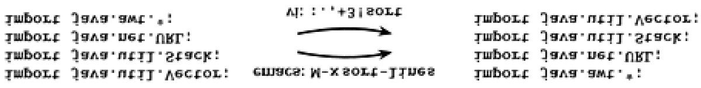
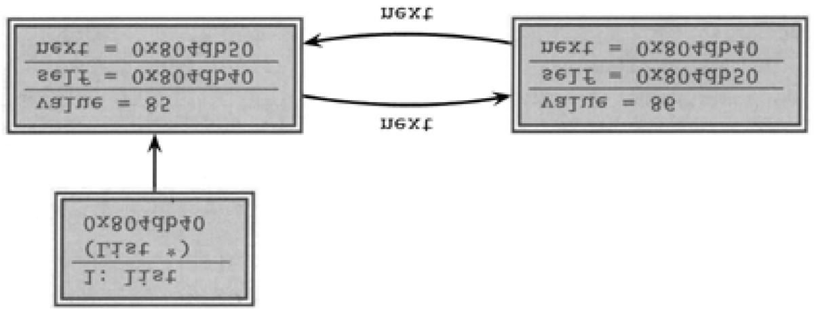

value. You expect to introduce some errors in this step. The trick is to work out which
parameters have the most impact on the result, and concentrate on getting them about
right. Typically, parameters whose values are added into a result are less significant than
those that are multiplied or divided. Doubling a line speed may double the amount of data
received in an hour, while adding a 5 ms transit delay will have no noticeable effect.
You should have a justifiable way of calculating these critical parameters. For the queuing
example, you might want to measure the actual transaction arrival rate of the existing
system, or find a similar system to measure. Similarly, you could measure the current time
taken to serve a request, or come up with an estimate using the techniques described in
this section. In fact, you'll often find yourself basing an estimate on other subestimates.
This is where your largest errors will creep in.
Calculate the Answers
Only in the simplest of cases will an estimate have a single answer. You might be happy to
say "I can walk five cross-town blocks in 15 minutes." However, as the systems get more
complex, you'll want to hedge your answers. Run multiple calculations, varying the values
of the critical parameters, until you work out which ones really drive the model. A
spreadsheet can be a big help. Then couch your answer in terms of these parameters.
"The response time is roughly three quarters of a second if the system has a SCSI bus and
64MB memory, and one second with 48MB memory." (Notice how "three quarters of a
second" conveys a different feeling of accuracy than 750 ms.)
During the calculation phase, you may start getting answers that seem strange. Don't be
too quick to dismiss them. If your arithmetic is correct, your understanding of the problem
or your model is probably wrong. This is valuable information.
Keep Track of Your Estimating Prowess
We think it's a great idea to record your estimates so you can see how close you were. If
an overall estimate involved calculating subestimates, keep track of these as well. Often
you'll find your estimates are pretty good—in fact, after a while, you'll come to expect this.
When an estimate turns out wrong, don't just shrug and walk away. Find out why it differed
from your guess. Maybe you chose some parameters that didn't match the reality of the
problem. Maybe your model was wrong. Whatever the reason, take some time to uncover
what happened. If you do, your next estimate will be better.
Estimating Project Schedules
The normal rules of estimating can break down in the face of the complexities and vagaries
of a sizable application development. We find that often the only way to determine the
timetable for a project is by gaining experience on that same project. This needn't be a
paradox if you practice incremental development, repeating the following steps.
Check requirements
Analyze risk
Design, implement, integrate
Validate with the users
Initially, you may have only a vague idea of how many iterations will be required, or how
long they may be. Some methods require you to nail this down as part of the initial plan,
but for all but the most trivial of projects this is a mistake. Unless you are doing an
application similar to a previous one, with the same team and the same technology, you'd
just be guessing.
So you complete the coding and testing of the initial functionality and mark this as the end
of the first increment. Based on that experience, you can refine your initial guess on the
number of iterations and what can be included in each. The refinement gets better and
better each time, and confidence in the schedule grows along with it.
Tip 19
Iterate the Schedule with the Code
This may not be popular with management, who typically want a single, hard-and-fast

number before the project even starts. You'll have to help them understand that the team,
their productivity, and the environment will determine the schedule. By formalizing this, and
refining the schedule as part of each iteration, you'll be giving them the most accurate
scheduling estimates you can.
What to Say When Asked for an Estimate
You say " I'll get back to you. "
You almost always get better results if you slow the process down and spend some time
going through the steps we describe in this section. Estimates given at the coffee machine
will (like the coffee) come back to haunt you.
Related sections include:
Challenges
Start keeping a log of your estimates. For each, track how accurate you turned out
to be. If your error was greater than 50%, try to find out where your estimate went
wrong.
Exercises
9.
You are asked "Which has a higher bandwidth: a 1Mbps communications line
or a person walking between two computers with a full 4GB tape in their
pocket?" What constraints will you put on your answer to ensure that the
scope of your response is correct? (For example, you might say that the time
taken to access the tape is ignored.)
10.
So, which has the higher bandwidth?
I l@ve RuBoard


I l@ve RuBoard
Chapter 3. The Basic Tools
Every craftsman starts his or her journey with a basic set of good-quality tools. A
woodworker might need rules, gauges, a couple of saws, some good planes, fine chisels,
drills and braces, mallets, and clamps. These tools will be lovingly chosen, will be built to
last, will perform specific jobs with little overlap with other tools, and, perhaps most
importantly, will feel right in the budding woodworker's hands.
Then begins a process of learning and adaptation. Each tool will have its own personality
and quirks, and will need its own special handling. Each must be sharpened in a unique
way, or held just so. Over time, each will wear according to use, until the grip looks like a
mold of the woodworker's hands and the cutting surface aligns perfectly with the angle at
which the tool is held. At this point, the tools become conduits from the craftsman's brain to
the finished product—they have become extensions of his or her hands. Over time, the
woodworker will add new tools, such as biscuit cutters, laser-guided miter saws, dovetail
jigs—all wonderful pieces of technology. But you can bet that he or she will be happiest
with one of those original tools in hand, feeling the plane sing as it slides through the wood.
Tools amplify your talent. The better your tools, and the better you know how to use them,
the more productive you can be. Start with a basic set of generally applicable tools. As you
gain experience, and as you come across special requirements, you'll add to this basic set.
Like the craftsman, expect to add to your toolbox regularly. Always be on the lookout for
better ways of doing things. If you come across a situation where you feel your current
tools can't cut it, make a note to look for something different or more powerful that would
have helped. Let need drive your acquisitions.
Many new programmers make the mistake of adopting a single power tool, such as a
particular integrated development environment (IDE), and never leave its cozy interface.
This really is a mistake. We need to be comfortable beyond the limits imposed by an IDE.
The only way to do this is to keep the basic tool set sharp and ready to use.
In this chapter we'll talk about investing in your own basic toolbox. As with any good
discussion on tools, we'll start (in The Power of Plain Text) by looking at your raw
materials, the stuff you'll be shaping. From there we'll move to the workbench, or in our
case the computer. How can you use your computer to get the most out of the tools you
use? We'll discuss this in Shell Games. Now that we have material and a bench to work
on, we'll turn to the tool you'll probably use more than any other, your editor. In Power


Editing, we'll suggest ways of making you more efficient.
To ensure that we never lose any of our precious work, we should always use a Source
Code Control system—even for things such as our personal address book! And, since Mr.
Murphy was really an optimist after all, you can't be a great programmer until you become
highly skilled at Debugging.
You'll need some glue to bind much of the magic together. We discuss some possibilities,
such as awk, Perl, and Python, in Text Manipulation.
Just as woodworkers sometimes build jigs to guide the construction of complex pieces,
programmers can write code that itself writes code. We discuss this in Code Generators.
Spend time learning to use these tools, and at some point you'll be surprised to discover
your fingers moving over the keyboard, manipulating text without conscious thought. The
tools will have become extensions of your hands.
I l@ve RuBoard


I l@ve RuBoard
The Power of Plain Text
As Pragmatic Programmers, our base material isn't wood or iron, it's knowledge. We
gather requirements as knowledge, and then express that knowledge in our designs,
implementations, tests, and documents. And we believe that the best format for storing
knowledge persistently is plain text. With plain text, we give ourselves the ability to
manipulate knowledge, both manually and programmatically, using virtually every tool at
our disposal.
What Is Plain Text?
Plain text is made up of printable characters in a form that can be read and understood
directly by people. For example, although the following snippet is made up of printable
characters, it is meaningless.
Fieldl9=467abe
The reader has no idea what the significance of 467abe may be. A better choice would be
to make it understandable to humans.
DrawingType=UMLActivityDrawing
Plain text doesn't mean that the text is unstructured; XML, SGML, and HTML are great
examples of plain text that has a well-defined structure. You can do everything with plain
text that you could do with some binary format, including versioning.
Plain text tends to be at a higher level than a straight binary encoding, which is usually
derived directly from the implementation. Suppose you wanted to store a property called
uses_menus that can be either TRUE or FALSE. Using text, you might write this as
myprop.uses_menus=FALSE
Contrast this with 0010010101110101.
The problem with most binary formats is that the context necessary to understand the data
is separate from the data itself. You are artificially divorcing the data from its meaning. The
data may as well be encrypted; it is absolutely meaningless without the application logic to
parse it. With plain text, however, you can achieve a self-describing data stream that is
independent of the application that created it.
Tip 20
Keep Knowledge in Plain Text
Drawbacks
There are two major drawbacks to using plain text: (1) It may take more space to store than
a compressed binary format, and (2) it may be computationally more expensive to interpret
and process a plain text file.
Depending on your application, either or both of these situations may be unacceptable—for
example, when storing satellite telemetry data, or as the internal format of a relational
database.
But even in these situations, it may be acceptable to store metadata about the raw data in
plain text (see Metaprogramming).
Some developers may worry that by putting metadata in plain text, they're exposing it to
the system's users. This fear is misplaced. Binary data may be more obscure than plain
text, but it is no more secure. If you worry about users seeing passwords, encrypt them. If
you don't want them changing configuration parameters, include a secure hash[1] of all the
parameter values in the file as a checksum.
[1] MD5 is often used for this purpose. For an excellent introduction to the wonderful world of
cryptography, see [Sch95].
The Power of Text
Since larger and slower aren't the most frequently requested features from users, why
bother with plain text? What are the benefits?
Insurance against obsolescence
Leverage
Easier testing
Insurance Against Obsolescence
Human-readable forms of data, and self-describing data, will outlive all other forms of data
and the applications that created them. Period.
As long as the data survives, you will have a chance to be able to use it—potentially long
after the original application that wrote it is defunct.
You can parse such a file with only partial knowledge of its format; with most binary files,
you must know all the details of the entire format in order to parse it successfully.
Consider a data file from some legacy system[2] that you are given. You know little about
the original application; all that's important to you is that it maintained a list of clients' Social
Security numbers, which you need to find and extract. Among the data, you see
[2] All software becomes legacy as soon as it's written.
<FIELD10>123-45-6789</FIELD10>
...
<FIELD10>567-89-0123</FIELD10>
...
<FIELD10>901-23-4567</FIELD10>
Recognizing the format of a Social Security number, you can quickly write a small program
to extract that data—even if you have no information on anything else in the file.
But imagine if the file had been formatted this way instead:
AC27123456789B11P
...
XY43567890123QTYL
...
6T2190123456788AM
You may not have recognized the significance of the numbers quite as easily. This is the
difference between human readable and human understandable.
While we're at it, FIELD10 doesn't help much either. Something like
<SSNO>123-45-6789</SSNO>
makes the exercise a no-brainer—and ensures that the data will outlive any project that
created it.
Leverage
Virtually every tool in the computing universe, from source code management systems to
compiler environments to editors and stand-alone filters, can operate on plain text.
The Unix Philosophy
Unix is famous for being designed around the philosophy of small, sharp tools,
each intended to do one thing well. This philosphy is enabled by using a
common underlying format—the line-oriented, plain text file. Databases used for
system administration (users and passwords, networking configuration, and so
on) are all kept as plain text files. (some systems, such as Solaris, also maintain
a binary forms of certain databases as a performance optimization. The plain text
version is kept as an interface to the binary version.)
When a system crashes, you may be faced with only a minimal environment to
restore it (You may not be able to access graphics drivers, for instance),
Situations such as this can really make you appreciate the simplicity of plain text.
For instance, suppose you have a production deployment of a large application with a
complex site-specific configuration file (sendmail comes to mind). If this file is in plain text,
you could place it under a source code control system (see Source Code Control), so that
you automatically keep a history of all changes. File comparison tools such as diff and fc
allow you to see at a glance what changes have been made, while sum allows you to
generate a checksum to monitor the file for accidental (or malicious) modification.
Easier Testing
If you use plain text to create synthetic data to drive system tests, then it is a simple matter
to add, update, or modify the test data without having to create any special tools to do
so. Similarly, plain text output from regression tests can be trivially analyzed (with diff, for
instance) or subjected to more thorough scrutiny with Perl, Python, or some other scripting
tool.
Lowest Common Denominator
Even in the future of XML-based intelligent agents that travel the wild and dangerous
Internet autonomously, negotiating data interchange among themselves, the ubiquitous
text file will still be there. In fact, in heterogeneous environments the advantages of plain
text can outweigh all of the drawbacks. You need to ensure that all parties can
communicate using a common standard. Plain text is that standard.
Related sections include:
Challenges
Design a small address book database (name, phone number, and so on) using a
straightforward binary representation in your language of choice. Do this before
reading the rest of this challenge.
1. Translate that format into a plain text format using XML.
2.
For each version, add a new, variable-length field called directions in which


you might enter directions to each person's house.
What issues come up regarding versioning and extensibility? Which form was
easier to modify? What about converting existing data?
I l@ve RuBoard


I l@ve RuBoard
Shell Games
Every woodworker needs a good, solid, reliable workbench, somewhere to hold work
pieces at a convenient height while he or she works them. The workbench becomes the
center of the wood shop, the craftsman returning to it time and time again as a piece takes
shape.
For a programmer manipulating files of text, that workbench is the command shell. From
the shell prompt, you can invoke your full repertoire of tools, using pipes to combine them
in ways never dreamt of by their original developers. From the shell, you can launch
applications, debuggers, browsers, editors, and utilities. You can search for files, query the
status of the system, and filter output. And by programming the shell, you can build
complex macro commands for activities you perform often.
For programmers raised on GUI interfaces and integrated development environments
(IDEs), this might seem an extreme position. After all, can't you do everything equally well
by pointing and clicking?
The simple answer is "no." GUI interfaces are wonderful, and they can be faster and more
convenient for some simple operations. Moving files, reading MIME-encoded e-mail, and
typing letters are all things that you might want to do in a graphical environment. But if you
do all your work using GUIs, you are missing out on the full capabilities of your
environment. You won't be able to automate common tasks, or use the full power of the
tools available to you. And you won't be able to combine your tools to create customized
macro tools. A benefit of GUIs is WYSIWYG—what you see is what you get. The
disadvantage is WYSIAYG—what you see is all you get.
GUI environments are normally limited to the capabilities that their designers intended. If
you need to go beyond the model the designer provided, you are usually out of luck—and
more often than not, you do need to go beyond the model. Pragmatic Programmers don't
just cut code, or develop object models, or write documentation, or automate the build
process—we do all of these things. The scope of any one tool is usually limited to the tasks
that the tool is expected to perform. For instance, suppose you need to integrate a code
preprocessor (to implement design-by-contract, or multi-processing pragmas, or some
such) into your IDE. Unless the designer of the IDE explicitly provided hooks for this
capability, you can't do it.
You may already be comfortable working from the command prompt, in which case you
can safely skip this section. Otherwise, you may need to be convinced that the shell is your
friend.
As a Pragmatic Programmer, you will constantly want to perform ad hoc
operations—things that the GUI may not support. The command line is better suited when
you want to quickly combine a couple of commands to perform a query or some other task.
Here are a few examples.
Find all . cfiles modified more recently than your Makefile.
Shell…
find . -name ' *.c' -newer Makefile -print
GUI….. Open the Explorer, navigate to the correct directory, click on the Makefile, and note the
modification time. Then bring up Tools/Find, and enter *.c for the file specification. Select the
date tab, and enter the date you noted for the Makefile in the first date field. Then hit OK.
Construct a zip/tar archive of my source.
Shell…
zip archive.zip *.h *.c - or-
tar cvf archive.tar *.h *.c
GUI….. Bring up a ZIP utility (such as the shareware WinZip [URL 41], select "Create New Archive,"
enter its name, select the source directory in the add dialog, set the filter to "* .c", click "Add,"
set the filter to "* .h", click "Add," then close the archive.¨
Which Java files have not been changed in the last week?
Shell…
find . -name '*.java' -mtime +7 -print
GUI….. Click and navigate to "Find files," click the "Named" field and type in "*.java", select the "Date
Modified" tab. Then select "Between." Click on the starting date and type in the starting date
of the beginning of the project. Click on the ending date and type in the date of a week ago
today (be sure to have a calendar handy). Click on "Find Now."
Of those files, which use the awtlibraries?
Shell…
find . -name '*.java' -mtime +7 -print |
xargs grep 'java.awt'
GUI….. Load each file in the list from the previous example into an editor and search for the string
"java.awt". Write down the name of each file containing a match.
Clearly the list could go on. The shell commands may be obscure or terse, but they are
powerful and concise. And, because shell commands can be combined into script files (or
command files under Windows systems), you can build sequences of commands to
automate things you do often.
Tip 21
Use the Power of Command Shells
Gain familiarity with the shell, and you'll find your productivity soaring. Need to create a list
of all the unique package names explicitly imported by your Java code? The following
stores it in a file called "list."
grep '^import ' *.java |
sed -e's/.*import *//' -e's/;.*$//' |
sort -u >list
If you haven't spent much time exploring the capabilities of the command shell on the
systems you use, this might appear daunting. However, invest some energy in becoming
familiar with your shell and things will soon start falling into place. Play around with your
command shell, and you'll be surprised at how much more productive it makes you.
Shell Utilities and Windows Systems
Although the command shells provided with Windows systems are improving gradually,
Windows command-line utilities are still inferior to their Unix counterparts. However, all is
not lost.
Cygnus Solutions has a package called Cygwin [URL 31]. As well as providing a Unix
compatibility layer for Windows, Cygwin comes with a collection of more than 120 Unix
utilities, including such favorites as 1s, grep, and find. The utilities and libraries may be
downloaded and used for free, but be sure to read their license. [3] The Cygwin distribution
comes with the Bash shell.
[3] The GNU General Public License [URL 57] is a kind of legal virus that Open Source developers use to
protect their (and your) rights. You should spend some time reading it. In essence, it says that you can
use and modify GPL'd software, but if you distribute any modifications they must be licensed according to
the GPL (and marked as such), and you must make source available. That's the virus part—whenever
you derive a work from a GPL'd work, your derived work must also be GPL'd. However, it does not limit
you in any way when simply using the tools—the ownership and licensing of software developed using
the tools are up to you.
Using Unix Tools Under Windows
We love the availability of high-quality Unix tools under Windows, and use them
daily. However, be aware that there are integration issues. Unlike their Ms-dos
counterparts, these utilities are sensitive to the case of filenames, so ls a*.bat
won't find AUTOEXEC.BAT. You may also come across problems with filenames
containing spaces, and with differences in path separators. Finally, there are
interesting problems when running Ms-dos programs that expect Ms-DOS-style
arguments under the Unix shells, For examples, the Java utilities from JavaSoft
use a colon as their CLASSPATH separators under Unix, but use a semicolon
under MS-DOS. As a result, a Bash or ksh script that runs on a Unix box will run
identically under Windows, but the command line it passes to Java will be
interpreted incorrectly.
Alternatively, David Korn (of Korn shell fame) has put together a package called uwin. This
has the same aims as the Cygwin distribution—it is a Unix development environment under
Windows. UWIN comes with a version of the Korn shell. Commercial versions are available
from Global Technologies, Ltd. [URL 30]. In addition, AT&T allows free downloading of the
package for evaluation and academic use. Again, read their license before using.
Finally, Tom Christiansen is (at the time of writing) putting together Perl Power Tools, an
attempt to implement all the familiar Unix utilities portably, in Perl [URL 32],
Related sections include:


Challenges
Are there things that you're currently doing manually in a GUI? Do you ever pass
instructions to colleagues that involve a number of individual "click this button,"
"select this item" steps? Could these be automated?
Whenever you move to a new environment, make a point of finding out what shells
are available. See if you can bring your current shell with you.
Investigate alternatives to your current shell. If you come across a problem your
shell can't address, see if an alternative shell would cope better.
I l@ve RuBoard


I l@ve RuBoard
Power Editing
We've talked before about tools being an extension of your hand. Well, this applies to
editors more than to any other software tool. You need to be able to manipulate text as
effortlessly as possible, because text is the basic raw material of programming. Let's look
at some common features and functions that help you get the most from your editing
environment.
One Editor
We think it is better to know one editor very well, and use it for all editing tasks: code,
documentation, memos, system administration, and so on. Without a single editor, you face
a potential modern day Babel of confusion. You may have to use the built-in editor in each
language's IDE for coding, and an all-in-one office product for documentation, and maybe a
different built-in editor for sending e-mail. Even the keystrokes you use to edit command
lines in the shell may be different.[4] It is difficult to be proficient in any of these
environments if you have a different set of editing conventions and commands in each.
[4] Ideally, the shell you use should have keybindings that match the ones used by your editor. Bash, for
instance, supports both vi and emacs keybindings.
You need to be proficient. Simply typing linearly and using a mouse to cut and paste is not
enough. You just can't be as effective that way as you can with a powerful editor under
your fingers. Typing
or
ten times to move the cursor left to the
beginning of a line isn't as efficient as typing a single key such as
or
.
Tip 22
Use a Single Editor Well
Choose an editor, know it thoroughly, and use it for all editing tasks. If you use a single
editor (or set of keybindings) across all text editing activities, you don't have to stop and
think to accomplish text manipulation: the necessary keystrokes will be a reflex. The editor
will be an extension of your hand; the keys will sing as they slice their way through text and
thought. That's our goal.
Make sure that the editor you choose is available on all platforms you use. Emacs, vi,
CRiSP, Brief, and others are available across multiple platforms, often in both GUI and
non-GUI (text screen) versions.
Editor Features
Beyond whatever features you find particularly useful and comfortable, here are some
basic abilities that we think every decent editor should have. If your editor falls short in any
of these areas, then this may be the time to consider moving on to a more advanced one.
Configurable. All aspects of the editor should be configurable to your
preferences, including fonts, colors, window sizes, and keystroke bindings (which
keys perform what commands). Using only keystrokes for common editing
operations is more efficient than mouse or menu-driven commands, because your
hands never leave the keyboard.
Extensible. An editor shouldn't be obsolete just because a new programming
language comes out. It should be able to integrate with whatever compiler
environment you are using. You should be able to "teach" it the nuances of any
new language or text format (XML, HTML version 9, and so on).
Programmable. You should be able to program the editor to perform complex,
multistep tasks. This can be done with macros or with a built-in scripting
programming language (Emacs uses a variant of Lisp, for instance).
In addition, many editors support features that are specific to a particular programming
language, such as:
Syntax highlighting
Auto-completion
Auto-indentation
Initial code or document boilerplate

Tie-in to help systems
IDE-like features (compile, debug, and so on)
A feature such as syntax highlighting may sound like a frivolous extra, but in reality it can
be very useful and enhance your productivity. Once you get used to seeing keywords
appear in a different color or font, a mistyped keyword that doesn't appear that way jumps
out at you long before you fire up the compiler.
Having the ability to compile and navigate directly to errors within the editor environment is
very handy on big projects. Emacs in particular is adept at this style of interaction.
Productivity
A surprising number of people we've met use the Windows notepad utility to edit their
source code. This is like using a teaspoon as a shovel—simply typing and using basic
mouse-based cut and paste is not enough.
What sort of things will you need to do that can't be done in this way?
Well, there's cursor movement, to start with. Single keystrokes that move you in units of
words, lines, blocks, or functions are far more efficient than repeatedly typing a keystroke
that moves you character by character or line by line.
Or suppose you are writing Java code. You like to keep your import statements in
alphabetical order, and someone else has checked in a few files that don't adhere to this
standard (this may sound extreme, but on a large project it can save you a lot of time
scanning through a long list of import statements). You'd like to go quickly through a few
files and sort a small section of them. In editors such as vi and Emacs you can do this
easily (see Figure 3.1). Try that in notepad.
Figure 3.1. Sorting lines in an editor
Some editors can help streamline common operations. For instance, when you create a
new file in a particular language, the editor can supply a template for you. It might include:
Name of the class or module filled in (derived from the filename)
Your name and/or copyright statements
Skeletons for constructs in that language (constructor and destructor declarations,
for example)
Another useful feature is auto-indenting. Rather than having to indent manually (by using
space or tab), the editor automatically indents for you at the appropriate time (after typing
an open brace, for example). The nice part about this feature is that you can use the editor
to provide a consistent indentation style for your project. [5]
[5] The Linux kernel is developed this way. Here you have geographically dispersed developers, many
working on the same pieces of code. There is a published list of settings (in this case, for Emacs) that
describes the required indentation style.
Where to Go from Here
This sort of advice is particularly hard to write because virtually every reader is at a
different level of comfort and expertise with the editor(s) they are currently using. So, to
summarize, and to provide some guidance on where to go next, find yourself in the
left-hand column of the chart, and look at the right-hand column to see what we think you
should do.
If this sounds like you…
Then think about…
I use only basic features of
Pick a powerful editor and learn it well.
many different editors.
I have a favorite editor, but I
Learn them. Cut down the number of keystrokes you need to type.
don't use all of its features.
I have a favorite editor and use Try to expand and use it for more tasks than you do already.
it where possible.
I think you are nuts. Notepad is As long as you are happy and productive, go for it! But if you find
the best editor ever made.
yourself subject to "editor envy," you may need to reevaluate your
position.
What Editors Are Available?
Having recommended that you master a decent editor, which one do we recommend?
Well, we're going to duck that question; your choice of editor is a personal one (some
would even say a religious one!). However, in Appendix A, we list a number of popular


editors and where to get them.
Challenges
Some editors use full-blown languages for customization and scripting. Emacs, for
example, uses Lisp. As one of the new languages you are going to learn this year,
learn the language your editor uses. For anything you find yourself doing
repeatedly, develop a set of macros (or equivalent) to handle it.
Do you know everything your editor is capable of doing? Try to stump your
colleagues who use the same editor. Try to accomplish any given editing task in as
few keystrokes as possible.
I l@ve RuBoard


I l@ve RuBoard
Source Code Control
Progress, far from consisting in change, depends on retentiveness. Those who cannot
remember the past are condemned to repeat it.
George Santayana, Life of Reason
One of the important things we look for in a user interface is the
key—a single
button that forgives us our mistakes. It's even better if the environment supports multiple
levels of undo and redo, so you can go back and recover from something that happened a
couple of minutes ago. But what if the mistake happened last week, and you've turned your
computer on and off ten times since then? Well, that's one of the many benefits of using a
source code control system: it's a giant
key—a project-wide time machine that
can return you to those halcyon days of last week, when the code actually compiled and
ran.
Source code control systems, or the more widely scoped configuration management
systems, keep track of every change you make in your source code and documentation.
The better ones can keep track of compiler and OS versions as well. With a properly
configured source code control system, you can always go back to a previous version of
your software.
But a source code control system (SCCS[6] ) does far more than undo mistakes. A good
SCCS will let you track changes, answering questions such as: Who made changes in this
line of code? What's the difference between the current version and last week's? How
many lines of code did we change in this release? Which files get changed most often?
This kind of information is invaluable for bug-tracking, audit, performance, and quality
purposes.
[6] We use the uppercase SCCS to refer to generic source code control systems. There is also a specific
system called "sccs," originally released with AT&T System V Unix.
An SCCS will also let you identify releases of your software. Once identified, you will
always be able to go back and regenerate the release, independent of changes that may
have occurred later.
We often use an SCCS to manage branches in the development tree. For example, once
you have released some software, you'll normally want to continue developing for the next
release. At the same time, you'll need to deal with bugs in the current release, shipping
fixed versions to clients. You'll want these bug fixes rolled into the next release (if
appropriate), but you don't want to ship code under development to clients. With an SCCS
you can generate branches in the development tree each time you generate a release. You
apply bug fixes to code in the branch, and continue developing on the main trunk. Since
the bug fixes may be relevant to the main trunk as well, some systems allow you to merge
selected changes from the branch back into the main trunk automatically.
Source code control systems may keep the files they maintain in a central repository—a
great candidate for archiving.
Finally, some products may allow two or more users to be working concurrently on the
same set of files, even making concurrent changes in the same file. The system then
manages the merging of these changes when the files are sent back to the repository.
Although seemingly risky, such systems work well in practice on projects of all sizes.
Tip 23
Always Use Source Code Control
Always. Even if you are a single-person team on a one-week project. Even if it's a
"throw-away" prototype. Even if the stuff you're working on isn't source code. Make sure
that everything is under source code control—documentation, phone number lists, memos
to vendors, makefiles, build and release procedures, that little shell script that burns the CD
master—everything. We routinely use source code control on just about everything we
type (including the text of this book). Even if we're not working on a project, our day-to-day
work is secured in a repository.
Source Code Control and Builds
There is a tremendous hidden benefit in having an entire project under the umbrella of a
source code control system: you can have product builds that are automatic and
repeatable.


The project build mechanism can pull the latest source out of the repository automatically.
It can run in the middle of the night after everyone's (hopefully) gone home. You can run
automatic regression tests to ensure that the day's coding didn't break anything. The
automation of the build ensures consistency—there are no manual procedures, and you
won't need developers remembering to copy code into some special build area.
The build is repeatable because you can always rebuild the source as it existed on a given
date.
I l@ve RuBoard


I l@ve RuBoard
But My Team Isn't Using Source Code Control
Shame on them! Sounds like an opportunity to do some evangelizing! However, while you
wait for them to see the light, perhaps you should implement your own private source
control. Use one of the freely available tools we list in Appendix A, and make a point of
keeping your personal work safely tucked into a repository (as well as doing whatever your
project requires). Although this may seem to be duplication of effort, we can pretty much
guarantee it will save you grief (and save your project money) the first time you need to
answer questions such as "What did you do to the xyz module?" and "What broke the
build?" This approach may also help convince your management that source code control
really works.
Don't forget that an SCCS is equally applicable to the things you do outside of work.
I l@ve RuBoard


I l@ve RuBoard
Source Code Control Products
Appendix A, gives URLs for representative source code control systems, some commercial
and others freely available. And many more products are available—look for pointers to the
configuration management FAQ.
Related sections include:
Challenges
Even if you are not able to use an SCCS at work, install RCS or CVS on a personal
system. Use it to manage your pet projects, documents you write, and (possibly)
configuration changes applied to the computer system itself.
Take a look at some of the Open Source projects for which publicly accessible
archives are available on the Web (such as Mozilla [URL 51], KDE [URL 54], and
the Gimp [URL 55]). How do you get updates of the source? How do you make
changes—does the project regulate access or arbitrate the inclusion of changes?
I l@ve RuBoard


I l@ve RuBoard
Debugging
It is a painful thing
To look at your own trouble and know
That you yourself and no one else has made it
Sophocles, Ajax
The word bug has been used to describe an "object of terror" ever since the fourteenth
century. Rear Admiral Dr. Grace Hopper, the inventor of COBOL, is credited with
observing the first computer bug— literally, a moth caught in a relay in an early computer
system. When asked to explain why the machine wasn't behaving as intended, a
technician reported that there was "a bug in the system," and dutifully taped it—wings and
all—into the log book.
Regrettably, we still have "bugs" in the system, albeit not the flying kind. But the fourteenth
century meaning—a bogeyman—is perhaps even more applicable now than it was then.
Software defects manifest themselves in a variety of ways, from misunderstood
requirements to coding errors. Unfortunately, modern computer systems are still limited to
doing what you tell them to do, not necessarily what you want them to do.
No one writes perfect software, so it's a given that debugging will take up a major portion of
your day. Let's look at some of the issues involved in debugging and some general
strategies for finding elusive bugs.
Psychology of Debugging
Debugging itself is a sensitive, emotional subject for many developers. Instead of attacking
it as a puzzle to be solved, you may encounter denial, finger pointing, lame excuses, or just
plain apathy.
Embrace the fact that debugging is just problem solving, and attack it as such.
Having found someone else's bug, you can spend time and energy laying blame on the
filthy culprit who created it. In some workplaces this is part of the culture, and may be
cathartic. However, in the technical arena, you want to concentrate on fixing the problem,
not the blame.
Tip 24
Fix the Problem, Not the Blame
It doesn't really matter whether the bug is your fault or someone else's. It is still your
problem.
A Debugging Mindset
The easiest person to deceive is one's self
Edward Bulwer-Lytton, The Disowned
Before you start debugging, it's important to adopt the right mindset. You need to turn off
many of the defenses you use each day to protect your ego, tune out any project
pressures you may be under, and get yourself comfortable. Above all, remember the first
rule of debugging:
Tip 25
Don't Panic
It's easy to get into a panic, especially if you are facing a deadline, or have a nervous boss
or client breathing down your neck while you are trying to find the cause of the bug. But it is
very important to step back a pace, and actually think about what could be causing the
symptoms that you believe indicate a bug.
If your first reaction on witnessing a bug or seeing a bug report is "that's impossible," you
are plainly wrong. Don't waste a single neuron on the train of thought that begins "but that
can't happen" because quite clearly it can, and has.
Beware of myopia when debugging. Resist the urge to fix just the symptoms you see: it is
more likely that the actual fault may be several steps removed from what you are
observing, and may involve a number of other related things. Always try to discover the
root cause of a problem, not just this particular appearance of it.
Where to Start
Before you start to look at the bug, make sure that you are working on code that compiled
cleanly—without warnings. We routinely set compiler warning levels as high as possible. It
doesn't make sense to waste time trying to find a problem that the compiler could find for
you! We need to concentrate on the harder problems at hand.
When trying to solve any problem, you need to gather all the relevant data. Unfortunately,
bug reporting isn't an exact science. It's easy to be misled by coincidences, and you can't
afford to waste time debugging coincidences. You first need to be accurate in your
observations.
Accuracy in bug reports is further diminished when they come through a third party—you
may actually need to watch the user who reported the bug in action to get a sufficient level
of detail.
Andy once worked on a large graphics application. Nearing release, the testers reported
that the application crashed every time they painted a stroke with a particular brush. The
programmer responsible argued that there was nothing wrong with it; he had tried painting
with it, and it worked just fine. This dialog went back and forth for several days, with
tempers rapidly rising.
Finally, we got them together in the same room. The tester selected the brush tool and
painted a stroke from the upper right corner to the lower left corner. The application
exploded. "Oh," said the programmer, in a small voice, who then sheepishly admitted that
he had made test strokes only from the lower left to the upper right, which did not expose
the bug.
There are two points to this story:
You may need to interview the user who reported the bug in order to gather more
data than you were initially given.
Artificial tests (such as the programmer's single brush stroke from bottom to top)
don't exercise enough of an application. You must brutally test both boundary
conditions and realistic end-user usage patterns. You need to do this systematically
(see Ruthless Testing).
Debugging Strategies
Once you think you know what is going on, it's time to find out what the program thinks is
going on.
Bug Reproduction
No, our bugs aren't really multiplying (although some of them are probably old
enough to do it legally). We're talking about a different kind of reproduction.
The best way to start fixing a bug is to make it reproducible. After all, if you can't
reproduce it, how will you know if it is ever fixed?
But we want more than a bug that can be reproduced by following some long
series of steps; we want a bug that can be reproduced with a single command.
It's a lot harder to fix a bug if you have to go through 15 steps to get to the point
where the bug shows up. Sometimes by forcing yourself to isolate the
circumstances that display the bug, you'll even gain an insight on how to fix it.
See Ubiquitos Automation, for other ideas along these lines.
Visualize Your Data
Often, the easiest way to discern what a program is doing—or what it is going to do—is to
get a good look at the data it is operating on. The simplest example of this is a
straightforward "variable name = data value" approach, which may be implemented as
printed text, or as fields in a GUI dialog box or list.
But you can gain a much deeper insight into your data by using a debugger that allows you
to visualize your data and all of the interrelationships that exist. There are debuggers that
can represent your data as a 3D fly-over through a virtual reality landscape, or as a 3D
waveform plot, or just as simple structural diagrams, as shown in Figure 3.2 on the next

page. As you single-step through your program, pictures like these can be worth much
more than a thousand words, as the bug you've been hunting suddenly jumps out at you.
Figure 3.2. Sample debugger diagram of a circular linked list. The arrows represent pointers to
nodes.
Even if your debugger has limited support for visualizing data, you can still do it
yourself—either by hand, with paper and pencil, or with external plotting programs.
The DDD debugger has some visualization capabilities, and is freely available (see [URL
19]). It is interesting to note that DDD works with multiple languages, including Ada, C,
C++, Fortran, Java, Modula, Pascal, Perl, and Python (clearly an orthogonal design).
Tracing
Debuggers generally focus on the state of the program now. Sometimes you need
more—you need to watch the state of a program or a data structure over time. Seeing a
stack trace can only tell you how you got here directly. It can't tell you what you were doing
prior to this call chain, especially in event-based systems.
Tracing statements are those little diagnostic messages you print to the screen or to a file
that say things such as "got here" and "value of x = 2." It's a primitive technique compared
with IDE-style debuggers, but it is peculiarly effective at diagnosing several classes of
errors that debuggers can't. Tracing is invaluable in any system where time itself is a
factor: concurrent processes, real-time systems, and event-based applications.
You can use tracing statements to "drill down" into the code. That is, you can add tracing
statements as you descend the call tree.
Trace messages should be in a regular, consistent format; you may want to parse them
automatically. For instance, if you needed to track down a resource leak (such as
unbalanced file opens/closes), you could trace each open and each close in a log file. By
processing the log file with Perl, you could easily identify where the offending open was
occurring.
Corrupt Variables? Check Their Neighborhood
Sometimes you'll examine a variable, expecting to see a small integer value, and
instead get something like 0x6e69614d. Before you roll up your sleeves for some
serious debugging, have a quick look at the memory around this corrupted
variable. Often it will give you a clue. In our case, examining the surrounding
memory as characters shows us
20333231 6e69614d 2c745320 746f4e0a
1 2 3 M a i n S t , \n N o t
2c6e776f 2058580a 31323433 00000a33
o w n , \n x x 3 4 2 1 3\n\0\0
Looks like someone sprayed a street address over our counter. Now we know
where to look.
Rubber Ducking
A very simple but particularly useful technique for finding the cause of a problem is simply
to explain it to someone else. The other person should look over your shoulder at the
screen, and nod his or her head constantly (like a rubber duck bobbing up and down in a
bathtub). They do not need to say a word; the simple act of explaining, step by step, what
the code is supposed to do often causes the problem to leap off the screen and announce
[7] Why "rubber ducking"? While an undergraduate at Imperial College in London, Dave did a lot of work
with a research assistant named Greg Pugh, one of the best developers Dave has known. For several
months Greg carried around a small yellow rubber duck, which he'd place on his terminal while coding. It
was a while before Dave had the courage to ask....
It sounds simple, but in explaining the problem to another person you must explicitly state
things that you may take for granted when going through the code yourself. By having to
verbalize some of these assumptions, you may suddenly gain new insight into the problem.
Process of Elimination
In most projects, the code you are debugging may be a mixture of application code written
by you and others on your project team, third-party products (database, connectivity,
graphical libraries, specialized communications or algorithms, and so on) and the platform
environment (operating system, system libraries, and compilers).
It is possible that a bug exists in the OS, the compiler, or a third-party product—but this
should not be your first thought. It is much more likely that the bug exists in the application
code under development. It is generally more profitable to assume that the application
code is incorrectly calling into a library than to assume that the library itself is broken. Even
if the problem does lie with a third party, you'll still have to eliminate your code before
submitting the bug report.
We worked on a project where a senior engineer was convinced that the select system call
was broken on Solaris. No amount of persuasion or logic could change his mind (the fact
that every other networking application on the box worked fine was irrelevant). He spent
weeks writing work-arounds, which, for some odd reason, didn't seem to fix the problem.
When finally forced to sit down and read the documentation on select, he discovered the
problem and corrected it in a matter of minutes. We now use the phrase "select is broken"
as a gentle reminder whenever one of us starts blaming the system for a fault that is likely
to be our own.
Tip 26
"select" Isn't Broken
Remember, if you see hoof prints, think horses—not zebras. The OS is probably not
broken. And the database is probably just fine.
If you "changed only one thing" and the system stopped working, that one thing was likely
to be responsible, directly or indirectly, no matter how farfetched it seems. Sometimes the
thing that changed is outside of your control: new versions of the OS, compiler, database,
or other third-party software can wreak havoc with previously correct code. New bugs
might show up. Bugs for which you had a work-around get fixed, breaking the work-around.
APIs change, functionality changes; in short, it's a whole new ball game, and you must
retest the system under these new conditions. So keep a close eye on the schedule when
considering an upgrade; you may want to wait until after the next release.
If, however, you have no obvious place to start looking, you can always rely on a good
old-fashioned binary search. See if the symptoms are present at either of two far away
spots in the code. Then look in the middle. If the problem is present, then the bug lies
between the start and the middle point; otherwise, it is between the middle point and the
end. You can continue in this fashion until you narrow down the spot sufficiently to identify
the problem.
The Element of Surprise
When you find yourself surprised by a bug (perhaps even muttering "that's impossible"
under your breath where we can't hear you), you must reevaluate truths you hold dear. In
that linked list routine—the one you knew was bulletproof and couldn't possibly be the
cause of this bug—did you test all the boundary conditions? That other piece of code
you've been using for years—it couldn't possibly still have a bug in it. Could it?
Of course it can. The amount of surprise you feel when something goes wrong is directly
proportional to the amount of trust and faith you have in the code being run. That's why,
when faced with a "surprising" failure, you must realize that one or more of your
assumptions is wrong. Don't gloss over a routine or piece of code involved in the bug
because you "know" it works. Prove it. Prove it in this context, with this data, with these
boundary conditions.
Tip 27
Don't Assume It—Prove It
When you come across a surprise bug, beyond merely fixing it, you need to determine why
this failure wasn't caught earlier. Consider whether you need to amend the unit or other
tests so that they would have caught it.
Also, if the bug is the result of bad data that was propagated through a couple of levels
before causing the explosion, see if better parameter checking in those routines would
have isolated it earlier (see the discussions on crashing early and assertions on pages 120
and 122, respectively).
While you're at it, are there any other places in the code that may be susceptible to this
same bug? Now is the time to find and fix them. Make sure that whatever happened, you'll
know if it happens again.
If it took a long time to fix this bug, ask yourself why. Is there anything you can do to make
fixing this bug easier the next time around? Perhaps you could build in better testing hooks,
or write a log file analyzer.
Finally, if the bug is the result of someone's wrong assumption, discuss the problem with
the whole team: if one person misunderstands, then it's possible many people do.
Do all this, and hopefully you won't be surprised next time.
Debugging Checklist
Is the problem being reported a direct result of the underlying bug, or merely a
symptom?
Is the bug really in the compiler? Is it in the OS? Or is it in your code?
If you explained this problem in detail to a coworker, what would you say?
If the suspect code passes its unit tests, are the tests complete enough? What
happens if you run the unit test with this data?
Do the conditions that caused this bug exist anywhere else in the system?
Related sections include:


Challenges
Debugging is challenge enough.
I l@ve RuBoard

I l@ve RuBoard
Text Manipulation
Pragmatic Programmers manipulate text the same way woodworkers shape wood. In
previous sections we discussed some specific tools—shells, editors, debuggers—that we
use. These are similar to a wood-worker's chisels, saws, and planes—tools specialized to
do one or two jobs well. However, every now and then we need to perform some
transformation not readily handled by the basic tool set. We need a general-purpose text
manipulation tool.
Text manipulation languages are to programming what routers[8] are to woodworking. They
are noisy, messy, and somewhat brute force. Make mistakes with them, and entire pieces
can be ruined. Some people swear they have no place in the toolbox. But in the right
hands, both routers and text manipulation languages can be incredibly powerful and
versatile. You can quickly trim something into shape, make joints, and carve. Used
properly, these tools have surprising finesse and subtlety. But they take time to master.
[8] Here router means the tool that spins cutting blades very, very fast, not a device for interconnecting
networks.
There is a growing number of good text manipulation languages. Unix developers often like
to use the power of their command shells, augmented with tools such as awk and sed.
People who prefer a more structured tool like the object-oriented nature of Python [URL 9].
Some people use Tcl [URL 23 ] as their tool of choice. We happen to prefer Perl [URL 8] for
hacking out short scripts.
These languages are important enabling technologies. Using them, you can quickly hack
up utilities and prototype ideas—jobs that might take five or ten times as long using
conventional languages. And that multiplying factor is crucially important to the kind of
experimenting that we do. Spending 30 minutes trying out a crazy idea is a whole lot better
that spending five hours. Spending a day automating important components of a project is
acceptable; spending a week might not be. In their book The Practice of Programming
[KP99], Kernighan and Pike built the same program in five different languages. The Perl
version was the shortest (17 lines, compared with C's 150). With Perl you can manipulate
text, interact with programs, talk over networks, drive Web pages, perform arbitrary
precision arithmetic, and write programs that look like Snoopy swearing.
Tip 28
Learn a Text Manipulation Language
To show the wide-ranging applicability of text manipulation languages, here's a sample of
some applications we've developed over the last few years.
Database schema maintenance. A set of Perl scripts took a plain text file
containing a database schema definition and from it generated:
The SQL statements to create the database
Flat data files to populate a data dictionary
C code libraries to access the database
Scripts to check database integrity
Web pages containing schema descriptions and diagrams
An XML version of the schema
Java property access. It is good OO programming style to restrict access to an
object's properties, forcing external classes to get and set them via methods.
However, in the common case where a property is represented inside the class by
a simple member variable, creating a get and set method for each variable is
tedious and mechanical. We have a Perl script that modifies the source files and
inserts the correct method definitions for all appropriately flagged variables.
Test data generation. We had tens of thousands of records of test data, spread
over several different files and formats, that needed to be knitted together and
converted into a form suitable for loading into a relational database. Perl did it in a
couple of hours (and in the process found a couple of consistency errors in the
original data).
Book writing. We think it is important that any code presented in a book should
have been tested first. Most of the code in this book has been. However, using the
DRY principle (see The Evils of Duplication) we didn't want to copy and paste lines
of code from the tested programs into the book. That would have meant that the


code was duplicated, virtually guaranteeing that we'd forget to update an example
when the corresponding program was changed. For some examples, we also didn't
want to bore you with all the framework code needed to make our example compile
and run. We turned to Perl. A relatively simple script is invoked when we format the
book—it extracts a named segment of a source file, does syntax highlighting, and
converts the result into the typesetting language we use.
C to Object Pascal interface. A client had a team of developers writing Object
Pascal on PCs. Their code needed to interface to a body of code written in C. We
developed a short Perl script that parsed the C header files, extracting the
definitions of all exported functions and the data structures they used. We then
generated Object Pascal units with Pascal records for all the C structures, and
imported procedure definitions for all the C functions. This generation process
became part of the build, so that whenever the C header changed, a new Object
Pascal unit would be constructed automatically.
Generating Web documentation. Many project teams are publishing their
documentation to internal Web sites. We have written many Perl programs that
analyze database schemas, C or C++ source files, makefiles, and other project
sources to produce the required HTML documentation. We also use Perl to wrap
the documents with standard headers and footers, and to transfer them to the Web
site.
We use text manipulation languages almost every day. Many of the ideas in this book can
be implemented more simply in them than in any other language of which we're aware.
These languages make it easy to write code generators, which we'll look at next.
Related sections include:
I l@ve RuBoard


I l@ve RuBoard
Exercises
11.
Your C program uses an enumerated type to represent one of 100 states.
You'd like to be able to print out the state as a string (as opposed to a
number) for debugging purposes. Write a script that reads from standard input
name
state_a
state_b
: :
Produce the file name.h, which contains
extern const char* NAME_names[];
typedef enum {
state_a,
state_b,
: :
} NAME;
and the file name.c, which contains
const char* NAME_names[] = {
"state_a",
"state_b",
: :
};
12.
Halfway through writing this book, we realized that we hadn't put the use strict
directive into many of our Perl examples. Write a script that goes through the


.p1 flies in a directory and adds a use strict at the end of the initial comment
block to all flies that don't already have one. Remember to keep a backup of
I l@ve RuBoard


I l@ve RuBoard
Code Generators
When woodworkers are faced with the task of producing the same thing over and over,
they cheat. They build themselves a jig or a template. If they get the jig right once, they can
reproduce a piece of work time after time. The jig takes away complexity and reduces the
chances of making mistakes, leaving the craftsman free to concentrate on quality.
As programmers, we often find ourselves in a similar position. We need to achieve the
same functionality, but in different contexts. We need to repeat information in different
places. Sometimes we just need to protect ourselves from carpal tunnel syndrome by
cutting down on repetitive typing.
In the same way a woodworker invests the time in a jig, a programmer can build a code
generator. Once built, it can be used throughout the life of the project at virtually no cost.
Tip 29
Write Code That Writes Code
There are two main types of code generators:
1. Passive code generators are run once to produce a result. From that point
forward, the result becomes freestanding—it is divorced from the code generator.
The wizards discussed in Evil Wizards, along with some CASE tools, are examples
of passive code generators.
2. Active code generators are used each time their results are required. The result is
a throw-away—it can always be reproduced by the code generator. Often, active
code generators read some form of script or control file to produce their results.
Passive Code Generators
Passive code generators save typing. They are basically parameterized templates,
generating a given output from a set of inputs. Once the result is produced, it becomes a
full-fledged source file in the project; it will be edited, compiled, and placed under source
control just like any other file. Its origins will be forgotten.
Passive code generators have many uses:
Creating new source files. A passive code generator can produce templates,
source code control directives, copyright notices, and standard comment blocks for
each new file in a project. We have our editors set up to do this whenever we
create a new file: edit a new Java program, and the new editor buffer will
automatically contain a comment block, package directive, and the outline class
declaration, already filled in.
Performing one-off conversions among programming languages. We started
writing this book using the troff system, but we switched to LaTeXafter 15 sections
had been completed. We wrote a code generator that read the troff source and
converted it to LaTeX. It was about 90% accurate; the rest we did by hand. This is
an interesting feature of passive code generators: they don't have to be totally
accurate. You get to choose how much effort you put into the generator, compared
with the energy you spend fixing up its output.
Producing lookup tables and other resources that are expensive to compute at
runtime. Instead of calculating trigonometric functions, many early graphics
systems used precomputed tables of sine and cosine values. Typically, these
tables were produced by a passive code generator and then copied into the source.
Active Code Generators
While passive code generators are simply a convenience, their active cousins are a
necessity if you want to follow the DRY principle. With an active code generator, you can
take a single representation of some piece of knowledge and convert it into all the forms
your application needs. This is not duplication, because the derived forms are disposable,
and are generated as needed by the code generator (hence the word active) .
Whenever you find yourself trying to get two disparate environments to work together, you
should consider using active code generators.
Perhaps you're developing a database application. Here, you're dealing with two
environments—the database and the programming language you are using to access it.

You have a schema, and you need to define low-level structures mirroring the layout of
certain database tables. You could just code these directly, but this violates the DRY
principle: knowledge of the schema would then be expressed in two places. When the
schema changes, you need to remember to change the corresponding code. If a column is
removed from a table, but the code base is not changed, you might not even get a
compilation error. The first you'll know about it is when your tests start failing (or when the
user calls).
An alternative is to use an active code generator—take the schema and use it to generate
the source code for the structures, as shown in Figure 3.3. Now, whenever the schema
changes, the code used to access it also changes, automatically. If a column is removed,
then its corresponding field in the structure will disappear, and any higher-level code that
uses that column will fail to compile. You've caught the error at compile time, not in
production. Of course, this scheme works only if you make the code generation part of the
[9] Just how do you go about building code from a database schema? There are several ways. If the
schema is held in a flat file (for example, as create table statements), then a relatively simple script can
parse it and generate the source. Alternatively, if you use a tool to create the schema directly in the
database, then you should be able to extract the information you need directly from the database's data
dictionary. Perl provides libraries that give you access to most major databases.
Figure 3.3. Active code generator creates code from a database schema
Another example of melding environments using code generators happens when different
programming languages are used in the same application. In order to communicate, each
code base will need some information in common—data structures, message formats, and
field names, for example. Rather than duplicate this information, use a code generator.
Sometimes you can parse the information out of the source files of one language and use it
to generate code in a second language. Often, though, it is simpler to express it in a
simpler, language-neutral representation and generate the code for both languages, as
shown in Figure 3.4 on the following page. Also see the answer to Exercise 13 on page
286 for an example of how to separate the parsing of the flat file representation from code

generation.
Figure 3.4. Generating code from a language-neutral representation. In the input file, lines
starting with 'M' flag the start of a message definition, 'F' lines define fields, and 'E' is the end
of the message.
Code Generators Needn't Be Complex
All this talk of active this and passive that may leave you with the impression that code
generators are complex beasts. They needn't be. Normally the most complex part is the
parser, which analyzes the input file. Keep the input format simple, and the code generator
becomes simple. Have a look at the answer to Exercise 13 (page 286): the actual code
generation is basically print statements.
Code Generators Needn't Generate Code
Although many of the examples in this section show code generators that produce
program source, this needn't always be the case. You can use code generators to write
just about any output: HTML, XML, plain text—any text that might be an input somewhere
else in your project.
Related sections include:


Exercises
13.
Write a code generator that takes the input file in Figure 3.4, and generates
output in two languages of your choice. Try to make it easy to add new
languages .
I l@ve RuBoard


I l@ve RuBoard
Chapter 4. Pragmatic Paranoia
Tip 30
You Can't Write Perfect Software
Did that hurt? It shouldn't. Accept it as an axiom of life. Embrace it. Celebrate it. Because
perfect software doesn't exist. No one in the brief history of computing has ever written a
piece of perfect software. It's unlikely that you'll be the first. And unless you accept this as a
fact, you'll end up wasting time and energy chasing an impossible dream.
So, given this depressing reality, how does a Pragmatic Programmer turn it into an
advantage? That's the topic of this chapter.
Everyone knows that they personally are the only good driver on Earth. The rest of the
world is out there to get them, blowing through stop signs, weaving between lanes, not
indicating turns, talking on the telephone, reading the paper, and just generally not living up
to our standards. So we drive defensively. We look out for trouble before it happens,
anticipate the unexpected, and never put ourselves into a position from which we can't
extricate ourselves.
The analogy with coding is pretty obvious. We are constantly interfacing with other people's
code—code that might not live up to our high standards—and dealing with inputs that may
or may not be valid. So we are taught to code defensively. If there's any doubt, we validate
all information we're given. We use assertions to detect bad data. We check for
consistency, put constraints on database columns, and generally feel pretty good about
ourselves.
But Pragmatic Programmers take this a step further. They don't trust themselves, either.
Knowing that no one writes perfect code, including themselves, Pragmatic Programmers
code in defenses against their own mistakes. We describe the first defensive measure in
Design by Contract: clients and suppliers must agree on rights and responsibilities.


In Dead Programs Tell No Lies, we want to ensure that we do no damage while we're
working the bugs out. So we try to check things often and terminate the program if things
go awry.
Assertive Programming describes an easy method of checking along the way—write code
that actively verifies your assumptions.
Exceptions, like any other technique, can cause more harm than good if not used properly.
We'll discuss the issues in When to Use Exceptions.
As your programs get more dynamic, you'll find yourself juggling system
resources—memory, files, devices, and the like. In How to Balance Resources, we'll
suggest ways of ensuring that you don't drop any of the balls.
In a world of imperfect systems, ridiculous time scales, laughable tools, and impossible
requirements, let's play it safe.
When everybody actually is out to get you, paranoia is just good thinking.
Woody Alien
I l@ve RuBoard


I l@ve RuBoard
Design by Contract
Nothing astonishes men so much as common sense and plain dealing.
Ralph Waldo Emerson, Essays
Dealing with computer systems is hard. Dealing with people is even harder. But as a
species, we've had longer to figure out issues of human interactions. Some of the solutions
we've come up with during the last few millennia can be applied to writing software as well.
One of the best solutions for ensuring plain dealing is the contract.
A contract defines your rights and responsibilities, as well as those of the other party. In
addition, there is an agreement concerning repercussions if either party fails to abide by
the contract.
Maybe you have an employment contract that specifies the hours you'll work and the rules
of conduct you must follow. In return, the company pays you a salary and other perks.
Each party meets its obligations and everyone benefits.
It's an idea used the world over—both formally and informally—to help humans interact.
Can we use the same concept to help software modules interact? The answer is "yes."
DBC
Bertrand Meyer [Mey97b] developed the concept of Design by Contract for the language
Eiffel.[1] It is a simple yet powerful technique that focuses on documenting (and agreeing to)
the rights and responsibilities of software modules to ensure program correctness. What is
a correct program? One that does no more and no less than it claims to do. Documenting
and verifying that claim is the heart of Design by Contract (DBC, for short).
[1] Based in part on earlier work by Dijkstra, Floyd, Hoare, Wirth, and others. For more information on
Eiffel itself, see [URL 10] and [URL 11].
Every function and method in a software system does something. Before it starts that
something, the routine may have some expectation of the state of the world, and it may be
able to make a statement about the state of the world when it concludes. Meyer describes
these expectations and claims as follows:
Preconditions. What must be true in order for the routine to be called; the
routine's requirements. A routine should never get called when its preconditions
would be violated. It is the caller's responsibility to pass good data (see the box on
page 115).
Postconditions. What the routine is guaranteed to do; the state of the world
when the routine is done. The fact that the routine has a postcondition implies that
it will conclude: infinite loops aren't allowed.
Class invariants. A class ensures that this condition is always true from the
perspective of a caller. During internal processing of a routine, the invariant may not
hold, but by the time the routine exits and control returns to the caller, the invariant
must be true. (Note that a class cannot give unrestricted write-access to any data
member that participates in the invariant.)
Let's look at the contract for a routine that inserts a data value into a unique, ordered list. In
iContract, a preprocessor for Java available from [URL 17], you'd specify it as
/**
* @invariant forall Node n in elements() |
* n.prev() != null
* implies
* n.value().compare To(n.prev().value()) > 0
*/
public class dbc_list {
/**
* @pre contains(aNode) == false
* @post contains(aNode) == true
*/
public void insertNode(final Node aNode) {
// ...
Here we are saying that nodes in this list must always be in increasing order. When you
insert a new node, it can't exist already, and we guarantee that the node will be found after
you have inserted it.
You write these preconditions, postconditions, and invariants in the target programming
language, perhaps with some extensions. For example, iContract provides predicate logic
operators—forall, exists, and implies—in addition to normal Java constructs. Your
assertions can query the state of any object that the method can access, but be sure that
the query is free from any side effects (see page 124).
DBC and Constant Parameters
Often, a postcondition will use parameters passed into a method to verify correct
behavior. But if the routine is allowed to change the parameter that's passed in,
you might be able to circumvent the contract. Eiffel doesn't allow this to happen,
but Java does. Here, we use the Java keyword final to indicate our intentions
that the parameter shouldn't be changed within the method. This isn't
foolproof–subclasses are free to redeclare the parameter as non-final.
Alternatively, you can use the iContract syntax variable@pre to get the original
value of the variable as it existed on entry to the method.
The contract between a routine and any potential caller can thus be read as
If all the routine's preconditions are met by the caller, the routine shall
guarantee that all postconditions and invariants will be true when it
completes.
If either party fails to live up to the terms of the contract, then a remedy (which was
previously agreed to) is invoked—an exception is raised, or the program terminates, for
instance. Whatever happens, make no mistake that failure to live up to the contract is a
bug. It is not something that should ever happen, which is why preconditions should not be
used to perform things such as user-input validation.
Tip 31
Design with Contracts
In Orthogonality, we recommended writing "shy" code. Here, the emphasis is on "lazy"
code: be strict in what you will accept before you begin, and promise as little as possible in
return. Remember, if your contract indicates that you'll accept anything and promise the
world in return, then you've got a lot of code to write!
Inheritance and polymorphism are the cornerstones of object-oriented languages and an
area where contracts can really shine. Suppose you are using inheritance to create an
"is-a-kind-of" relationship, where one class "is-a-kind-of" another class. You probably want
to adhere to the Liskov Substitution Principle [Lis88]:
Subclasses must be usable through the base class interface without the
need for the user to know the difference.
In other words, you want to make sure that the new subtype you have created really
"is-a-klnd-of" the base type—that it supports the same methods, and that the methods
have the same meaning. We can do this with contracts. We need to specify a contract only
once, in the base class, to have it applied to every future subclass automatically. A
subclass may, optionally, accept a wider range of input, or make stronger guarantees. But
it must accept at least as much, and guarantee as much, as its parent.
For example, consider the Java base class java.awt.Component. You can treat any visual
component in AWT or Swing as a Component, without knowing that the actual subclass is
a button, a canvas, a menu, or whatever. Each individual component can provide
additional, specific functionality, but it has to provide at least the basic capabilities defined
by Component. But there's nothing to prevent you from creating a subtype of Component
that provides correctly named methods that do the wrong thing. You can easily create a
paint method that doesn't paint, or a setFont method that doesn't set the font. AWT doesn't
have contracts to catch the fact that you didn't live up to the agreement.
Without a contract, all the compiler can do is ensure that a subclass conforms to a
particular method signature. But if we put a base class contract in place, we can now
ensure that any future subclass can't alter the meanings of our methods. For instance, you
might want to establish a contract for setFont such as the following, which ensures that the
font you set is the font you get:
/**
* @pre f != null
* @post getFont() == f
*/
public void setFont(final Font f) {
// ...
Implementing DBC
The greatest benefit of using DBC may be that it forces the issue of requirements and
guarantees to the forefront. Simply enumerating at design time what the input domain
range is, what the boundary conditions are, and what the routine promises to deliver—or,
more importantly, what it doesn't promise to deliver—is a huge leap forward in writing
better software. By not stating these things, you are back to programming by coincidence,
which is where many projects start, finish, and fail.
In languages that do not support DBC in the code, this might be as far as you can go—and
that's not too bad. DBC is, after all, a design technique. Even without automatic checking,
you can put the contract in the code as comments and still get a very real benefit. If nothing
else, the commented contracts give you a place to start looking when trouble strikes.
Assertions
While documenting these assumptions is a great start, you can get much greater benefit by
having the compiler check your contract for you. You can partially emulate this in some
languages by using assertions (see Assertive Programming). Why only partially? Can't
you use assertions to do everything DBC can do?
Unfortunately, the answer is no. To begin with, there is no support for propagating
assertions down an inheritance hierarchy. This means that if you override a base class
method that has a contract, the assertions that implement that contract will not be called
correctly (unless you duplicate them manually in the new code). You must remember to call
the class invariant (and all base class invariants) manually before you exit every method.
The basic problem is that the contract is not automatically enforced.
Also, there is no built-in concept of "old" values; that is, values as they existed at the entry
to a method. If you're using assertions to enforce contracts, you must add code to the
precondition to save any information you'll want to use in the postcondition. Compare this
with iContract, where the postcondition can just reference " Variable@pre," or with Eiffel,
which supports "old expression."
Finally, the runtime system and libraries are not designed to support contracts, so these
calls are not checked. This is a big loss, because it is often at the boundary between your
code and the libraries it uses that the most problems are detected (see Dead Programs
Tell No Lies for a more detailed discussion).
Language Support
Languages that feature built-in support of DBC (such as Eiffel and Sather [URL 12]) check
pre- and postconditions automatically in the compiler and runtime system. You get the
greatest benefit in this case because all of the code base (libraries, too) must honor their
contracts.
But what about more popular languages such as C, C++, and Java? For these languages,
there are preprocessors that process contracts embedded in the original source code as
special comments. The preprocessor expands these comments to code that verifies the
assertions.
For C and C++, you may want to investigate Nana [URL 18]. Nana doesn't handle
inheritance, but it does use the debugger at runtime to monitor assertions in a novel way.
For Java, there is iContract [URL 17]. It takes comments (in JavaDoc form) and generates
a new source file with the assertion logic included.
Preprocessors aren't as good as a built-in facility. They can be messy to integrate into your
project, and other libraries you use won't have contracts. But they can still be very helpful;
when a problem is discovered this way—especially one that you would never have
found—it's almost like magic.
DBC and Crashing Early
DBC fits in nicely with our concept of crashing early (see Dead Programs Tell No Lies).
Suppose you have a method that calculates square roots (such as in the Eiffel class
DOUBLE). It needs a precondition that restricts the domain to positive numbers. An Eiffel
precondition is declared with the keyword require, and a postcondition is declared with
ensure, so you could write
sqrt: DOUBLE is
-- Square root routine
require
sqrt_arg_must_be_positive: Current >= 0;
--- ...
--- calculate square root here
--- ...
ensure
((Result*Result) - Current).abs <= epsilon*Current.abs;
-- Result should be within error tolerance
end;
Who's responsible?
Who is repondible for cheeking the precondition, the caller or the routine being
called? when implemented as part of the language, the answer is neither: the
routine but before the routine itself is entered. Thus if there is any explicit
checking of parameters to be done, it must be performed by the caller, because
the routine itself will never see parameters that violate its precondition. (For
languages without built-in support, you would need to bracket the called routine
with a preamble and/or postamble that checks these assertions.)
Consider a program that reads a number from the console, calculate its square
root (by calling sqrt), and prints the result. The sqrt function has a
precondition—its argument must not be negative. If the user enters a negative
number at the console, it is up to the calling code to ensure that it never gets
passed to sqrt. This calling code has many options: it could terminate, it could
issue a warning and read another number, or it could make the number postive
and append an " i" to the result returned by sqrt. Whater its choice, this is
definitely not sqrt's problem.
By expressing the domain of the square root function in the precondition of the
sqrt routine, you shift the burden of correctness to the call—where it belongs. you
can then design the sqrt routine secure in the knowledge its input will be in range.
If your algorithm for calculating the square root fails (or isn't within the specified error
tolerance), you get an error message and a stack trace to show you the call chain.
If you pass sqrt a negative parameter, the Eiffel runtime prints the error
"sqrt_arg_must_be_positive," along with a stack trace. This is better than the alternative in
languages such as Java, C, and C++, where passing a negative number to sqrt returns the
special value NaN (Not a Number). It may be some time later in the program that you
attempt to do some math on NaN, with surprising results.
It's much easier to find and diagnose the problem by crashing early, at the site of the
problem.
Other Uses of Invariants
So far we have discussed pre- and postconditions that apply to individual methods and
invariants that apply to all methods within a class, but there are other useful ways to use
invariants.
Loop Invariants
Getting the boundary conditions right on a nontrMal loop can be problematic. Loops are
subject to the banana problem (I know how to spell "banana," but I don't know when to
stop), fencepost errors (not knowing whether to count the fenceposts or the spaces
between them), and the ubiquitous "off by one" error [URL 52].
Invariants can help in these situations: a loop invariant is a statement of the eventual goal
of a loop, but is generalized so that it is also valid before the loop executes and on each
iteration through the loop. You can think of it as a kind of miniature contract. The classic
example is a routine that finds the maximum value in an array.
int m = arr[0]; // example assumes arr.length > 0
int i = 1;
// Loop invariant: m = max(arr[0:i-1])
while (i < arr.length) {
m = Math.max(m, arr[i]);
i = i + 1;
}
( arr[m:n] is a notational convenience meaning a slice of the array from index m to n. ) The
invariant must be true before the loop runs, and the body of the loop must ensure that it
remains true as the loop executes. In this way we know that the invariant also holds when
the loop terminates, and therefore that our result is valid. Loop invariants can be coded
explicitly as assertions, but they are also useful as design and documentation tools.
Semantic Invariants
You can use semantic invariants to express inviolate requirements, a kind of
"philosophical contract."
We once wrote a debit card transaction switch. A major requirement was that the user of a
debit card should never have the same transaction applied to their account twice. In other
words, no matter what sort of failure mode might happen, the error should be on the side of
not processing a transaction rather than processing a duplicate transaction.
This simple law, driven directly from the requirements, proved to be very helpful in sorting
out complex error recovery scenarios, and guided the detailed design and implementation
in many areas.
Be sure not to confuse requirements that are fixed, inviolate laws with those that are
merely policies that might change with a new management regime. That's why we use the
term semantic invariants—it must be central to the very meaning of a thing, and not
subject to the whims of policy (which is what more dynamic business rules are for).
When you find a requirement that qualifies, make sure it becomes a well-known part of
whatever documentation you are producing— whether it is a bulleted list in the
requirements document that gets signed in triplicate or just a big note on the common
whiteboard that everyone sees. Try to state it clearly and unambiguously. For example, in
the debit card example, we might write
ERR IN FAVOR OF THE CONSUMER.
This is a clear, concise, unambiguous statement that's applicable in many different areas of
the system. It is our contract with all users of the system, our guarantee of behavior.
Dynamic Contracts and Agents
Until now, we have talked about contracts as fixed, immutable specifications. But in the
landscape of autonomous agents, this doesn't need to be the case. By the definition of
"autonomous," agents are free to reject requests that they do not want to honor. They are
free to renegotiate the contract—"I can't provide that, but if you give me this, then I might
provide something else."
Certainly any system that relies on agent technology has a critical dependence on
contractual arrangements—even if they are dynamically generated.
Imagine: with enough components and agents that can negotiate their own contracts
among themselves to achieve a goal, we might just solve the software productivity crisis by
letting software solve it for us.
But if we can't use contracts by hand, we won't be able to use them automatically. So next
time you design a piece of software, design its contract as well.
Related sections include:
Decoupling and the Law of Demeter
Challenges
Points to ponder: If DBC is so powerful, why isn't it used more widely? Is it hard to
come up with the contract? Does it make you think about issues you'd rather ignore
for now? Does it force you to THINK!? Clearly, this is a dangerous tool!
Exercises
14.
What makes a good contract? Anyone can add preconditions and
postconditions, but will they do you any good? Worse yet, will they actually do
more harm than good? For the example below and for those in Exercises 15
and 16, decide whether the specified contract is good, bad, or ugly, and
First, let's look at an Eiffel example. Here we have a routine for adding a
STRING to a doubly linked, circular list (remember that preconditions are
labeled with require, and postconditions with ensure).
-- Add an item to a doubly linked list,
-- and return the newly created NODE.
add_item (item : STRING) : NODE is
require
item /= Void -- '/=' is 'not equal'.
deferred -- Abstract base class.
ensure
result.next.previous = result -- Check the newly
result.previous.next = result -- added node's links.
find_item(item) = result -- Should find it.
end
15.
Next, let's try an example in Java?somewhat similar to the example in
Exercise 14. insertNumber inserts an integer into an ordered list. Pre-and
postconditions are labeled as in iContract (see [ URL 17]) .
private int data[];
/**
* @post data[index-1] < data[index] &&
* data[index] == aValue
*/
public Node insertNumber (final int aValue)
{
int index = findPlaceToInsert(aValue);
...


16.
Here's a fragment from a stack class in Java. Is this a good contract?
/**
* @pre anItem != null // Require real data
* @post pop() == anItem // Verify that it's
* // on the stack
*/
public void push(final String anItem)
17.
The classic examples of DBC (as in Exercises 14-16) show an
implementation of an ADT (Abstract Data Type)?typically a stack or queue.
But not many people really write these kinds of low-level classes.
So, for this exercise, design an interface to a kitchen blender. It will eventually
be a Web-based, Internet-enabled, CORBA-fied blender, but for now we just
need the interface to control it. It has ten speed settings (0 means off). You
can't operate it empty, and you can change the speed only one unit at a time
(that is, from 0 to 1, and from 1 to 2, not from 0 to 2).
Here are the methods. Add appropriate pre- and postconditions and an
invariant.
int getSpeed()
void setSpeed(int x)
boolean isFull()
void fill()
void empty()
18.
How many numbers are in the series 0,5,10,15,?, 100?
I l@ve RuBoard


I l@ve RuBoard
Dead Programs Tell No Lies
Have you noticed that sometimes other people can detect that things aren't well with you
before you're aware of the problem yourself? It's the same with other people's code. If
something is starting to go awry with one of our programs, sometimes it is a library routine
that catches it first. Maybe a stray pointer has caused us to overwrite a file handle with
something meaningless. The next call to read will catch it. Perhaps a buffer overrun has
trashed a counter we're about to use to determine how much memory to allocate. Maybe
we'll get a failure from malloc. A logic error a couple of million instructions ago means that
the selector for a case statement is no longer the expected 1, 2, or 3. We'll hit the default
case (which is one reason why each and every case/switch statement needs to have a
default clause—we want to know when the "impossible" has happened).
It's easy to fall into the "it can't happen" mentality. Most of us have written code that didn't
check that a file closed successfully, or that a trace statement got written as we expected.
And all things being equal, it's likely that we didn't need to—the code in question wouldn't
fail under any normal conditions. But we're coding defensively. We're looking for rogue
pointers in other parts of our program trashing the stack. We're checking that the correct
versions of shared libraries were actually loaded.
All errors give you information. You could convince yourself that the error can't happen,
and choose to ignore it. Instead, Pragmatic Programmers tell themselves that if there is an
error, something very, very bad has happened.
Tip 32
Crash Early
Crash, Don't Trash
One of the benefits of detecting problems as soon as you can is that you can crash earlier.
And many times, crashing your program is the best thing you can do. The alternative may
be to continue, writing corrupted data to some vital database or commanding the washing
machine into its twentieth consecutive spin cycle.
The Java language and libraries have embraced this philosophy. When something
unexpected happens within the runtime system, it throws a RuntimeException. If not
caught, this will percolate up to the top level of the program and cause it to halt, displaying
a stack trace.
You can do the same in other languages. If you don't have an exception mechanism, or if
your libraries don't throw exceptions, then make sure you handle the errors yourself. In C,
macros can be very useful for this:
#define CHECK(LINE, EXPECTED) \
{ int rc = LINE; \
if (rc != EXPECTED) \
ut_abort(__FILE__, __LINE__, #LINE, rc, EXPECTED); }
void ut_abort(char *file, int ln, char *line, int rc, int exp) {
fprintf(stderr, "%s line %d\n'%s': expected %d, got %d\n",
file, ln, line, exp, rc);
exit(1);
}
Then you can wrap calls that should never fail using
CHECK(stat("/tmp", &stat_buff), 0);
If it should fail, you'd get a message written to stderr:
source.c line 19
'stat("/tmp", &stat_buff)': expected 0, got -1
Clearly it is sometimes inappropriate simply to exit a running program. You may have
claimed resources that might not get released, or you may need to write log messages, tidy
up open transactions, or interact with other processes. The techniques we discuss in When
to Use Exceptions, will help here. However, the basic principle stays the same—when your
code discovers that something that was supposed to be impossible just happened, your
program is no longer viable. Anything it does from this point forward becomes suspect, so
terminate it as soon as possible. A dead program normally does a lot less damage than a


crippled one.
Related sections include:
I l@ve RuBoard


I l@ve RuBoard
Assertive Programming
There is a luxury in self-reproach. When we blame ourselves we feel no one else has
a right to blame us.
Oscar Wilde, The Picture of Dorian Gray
It seems that there's a mantra that every programmer must memorize early in his or her
career. It is a fundamental tenet of computing, a core belief that we learn to apply to
requirements, designs, code, comments, just about everything we do. It goes
THIS CAN NEVER HAPPEN…
"This code won't be used 30 years from now, so two-digit dates are fine." "This application
will never be used abroad, so why internationalize it?" "count can't be negative." "This printf
can't fail."
Let's not practice this kind of self-deception, particularly when coding.
Tip 33
If It Can't Happen, Use Assertions to Ensure That It Won't
Whenever you find yourself thinking "but of course that could never happen," add code to
check it. The easiest way to do this is with assertions. In most C and C++ implementations,
you'll find some form of assert or _assert macro that checks a Boolean condition. These
macros can be invaluable. If a pointer passed in to your procedure should never be NULL,
then check for it:
void writeString(char *string) {
assert(string != NULL);
...
Assertions are also useful checks on an algorithm's operation. Maybe you've written a
clever sort algorithm. Check that it works:
for (int i = 0; i < num_entries-1; i++) {
assert(sorted[i] <= sorted[i+i]);
}
Of course, the condition passed to an assertion should not have a side effect (see the box
on page 124). Also remember that assertions may be turned off at compile time—never put
code that must be executed into an assert.
Don't use assertions in place of real error handling. Assertions check for things that should
never happen: you don't want to be writing code such as
printf(" Enter 'Y' or 'N': ");
ch = getchar();
assert((ch == 'Y') || (ch == 'N')); /* bad idea! */
And just because the supplied assert macros call exit when an assertion fails, there's no
reason why versions you write should. If you need to free resources, have an assertion
failure generate an exception, longjmp to an exit point, or call an error handler. Just make
sure the code you execute in those dying milliseconds doesn't rely on the information that
triggered the assertion failure in the first place.
Leave Assertions Turned On
There is a common misunderstanding about assertions, promulgated by the people who
write compilers and language environments. It goes something like this:
Assertions odd some overhead to code. Because they check for things
that should never happen, they'll get triggered only by a bug in the
code. Once the code has been tested and shipped, they are no longer
needed, and should be turned off to make the code run faster.
Assertions are a debugging facility.
There are two patently wrong assumptions here. First, they assume that testing finds all
the bugs. In reality, for any complex program you are unlikely to test even a miniscule
percentage of the permutations your code will be put through (see Ruthless Testing).
Second, the optimists are forgetting that your program runs in a dangerous world. During
testing, rats probably won't gnaw through a communications cable, someone playing a
game won't exhaust memory, and log files won't fill the hard drive. These things might
happen when your program runs in a production environment. Your first line of defense is
checking for any possible error, and your second is using assertions to try to detect those
you've missed.
Turning off assertions when you deliver a program to production is like crossing a high wire
without a net because you once made it across in practice. There's dramatic value, but it's
hard to get life insurance.
Even if you do have performance issues, turn off only those assertions that really hit you.
The sort example above may be a critical part of
Assertion and Side Effects
It is embarrassing when the code we add to detect errors actually ends up
creatings new errors. This can happen with assertions if evaluating the condition
has side effects. for example, in Java it would be a bad to code something such
as
while (iter.hasmoreElements () {
Test.ASSERT(iter.nextElements() != null);
object obj = iter.nextElement();
// ....
}
The .nextElement() call in the ASSERT has the side effects of moving the iterator
past the element being fetched, and so the loop will process only half the
elements in the collection. It would be better to write
while (iter.hasmoreElements()) {
object obj = iter.nextElement();
Test.ASSERT(obj != null);
//....
}
This problem is a kind of "Heisenbug"—debugging that changes the behavior of
the system system being debugged (see [URL 52]).
your application, and may need to be fast. Adding the check means another pass through
the data, which might be unacceptable. Make that particular check optional,[2] but leave the
rest in.
[2] In C-based languages, you can either use the preprocessor or use if statements to make assertions
optional. Many implementations turn off code generation for the assert macro if a compile-time flag is set
(or not set). Otherwise, you can place the code within an if statement with a constant condition, which
many compilers (including most common Java systems) will optimize away.
Related sections include:
Exercises
19.
A quick reality check. Which of these "impossible" things can happen?
1. A month with fewer than 28 days
2. stat("." ,&sb) == -1 (that is, can't access the current directory)
3. In C++: a = 2; b = 3; if (a + b != 5) exit(1);
4. A triangle with an interior angle sum \u8800 180°
5. A minute that doesn't have 60 seconds


6. In Java: a + 1) <= a
20.
Develop a simple assertion checking class for Java.
I l@ve RuBoard


I l@ve RuBoard
When to Use Exceptions
In Dead Programs Tell No Lies, we suggested that it is good practice to check for every
possible error—particularly the unexpected ones. However, in practice this can lead to
some pretty ugly code; the normal logic of your program can end up being totally obscured
by error handling, particularly if you subscribe to the "a routine must have a single return
statement" school of programming (we don't). We've seen code that looks something like
the following:
retcode = OK;
if (socket.read(name) != OK) {
retcode = BAD_READ;
}
else {
processName(name);
if (socket.read(address) != OK) {
retcode = BAD_READ;
}
else {
processAddress(address);
if (socket.read(telNo) != OK) {
retcode = BAD_READ;
}
else {
// etc, etc...
}
}
}
return retcode;
Fortunately, if the programming language supports exceptions, you can rewrite this code in
a far neater way:
retcode = OK;
try {
socket.read(name);
process(name);
socket.read(address);
processAddress(address);
socket.read(telNo);
// etc, etc...
}
catch (IOException e) {
retcode = BAD_READ;
Logger.log( "Error reading individual: " + e.getMessage());
}
return retcode;
The normal flow of control is now clear, with all the error handling moved off to a single
place.
What Is Exceptional?
One of the problems with exceptions is knowing when to use them. We believe that
exceptions should rarely be used as part of a program's normal flow; exceptions should be
reserved for unexpected events. Assume that an uncaught exception will terminate your
program and ask yourself, "Will this code still run if I remove all the exception handlers?" If
the answer is "no," then maybe exceptions are being used in nonexceptional
circumstances.
For example, if your code tries to open a file for reading and that file does not exist, should
an exception be raised?
Our answer is, "It depends." If the file should have been there, then an exception is
warranted. Something unexpected happened—a file you were expecting to exist seems to
have disappeared. On the other hand, if you have no idea whether the file should exist or
not, then it doesn't seem exceptional if you can't find it, and an error return is appropriate.
Let's look at an example of the first case. The following code opens the file /etc/passwd,
which should exist on all Unix systems. If it fails, it passes on the FileNotFoundException to
its caller.
public void open_passwd() throws FileNotFoundException {
// This may throw FileNotFoundException...
ipstream = new FileInputStream(" /etc/passwd");
// ...
}
However, the second case may involve opening a file specified by the user on the
command line. Here an exception isn't warranted, and the code looks different:
public boolean open_user_file(String name)
throws FileNotFoundException {
File f = new File(name);
if (!f.exists()) {
return false;
}
ipstream = new FileInputStream(f);
return true;
}
Note that the FileInputStream call can still generate an exception, which the routine passes
on. However, the exception will be generated under only truly exceptional circumstances;
simply trying to open a file that does not exist will generate a conventional error return.
Tip 34
Use Exceptions for Exceptional Problems
Why do we suggest this approach to exceptions? Well, an exception represents an
immediate, nonlocal transfer of control—it's a kind of cascading goto. Programs that use
exceptions as part of their normal processing suffer from all the readability and
maintainability problems of classic spaghetti code. These programs break encapsulation:
routines and their callers are more tightly coupled via exception handling.
Error Handlers Are an Alternative
An error handler is a routine that is called when an error is detected. You can register a
routine to handle a specific category of errors. When one of these errors occurs, the
handler will be called.
There are times when you may want to use error handlers, either instead of or alongside
exceptions. Clearly, if you are using a language such as C, which does not support
exceptions, this is one of your few other options (see the challenge on the next page).
However, sometimes error handlers can be used even in languages (such as Java) that
have a good exception handling scheme built in.
Consider the implementation of a client-server application, using Java's Remote Method
Invocation (RMI) facility. Because of the way RMI is implemented, every call to a remote
routine must be prepared to handle a RemoteException. Adding code to handle these
exceptions can become tedious, and means that it is difficult to write code that works with
both local and remote routines. A possible work-around is to wrap your remote objects in a
class that is not remote. This class then implements an error handler interface, allowing the
client code to register a routine to be called when a remote exception is detected.
Related sections include:
Challenges
Languages that do not support exceptions often have some other nonlocal transfer
of control mechanism (C has longjmp/setjmp, for example). Consider how you
could implement some kind of ersatz exception mechanism using these facilities.
What are the benefits and dangers? What special steps do you need to take to
ensure that resources are not orphaned? Does it make sense to use this kind of
solution whenever you code in C?
Exercises


21.
While designing a new container class, you identify the following possible
1. No memory available for a new element in the add routine
2. Requested entry not found in the fetch routine
3. null pointer passed to the add routine
How should each be handled? Should an error be generated, should an
exception be raised, or should the condition be ignored?
I l@ve RuBoard


I l@ve RuBoard
How to Balance Resources
"I brought you into this world, " my father would say," and I can take you out. It don't
make no difference to me. I'll just make another one like you."
Bill Cosby, Fatherhood
We all manage resources whenever we code: memory, transactions, threads, flies,
timers—all kinds of things with limited availability. Most of the time, resource usage follows
a predictable pattern: you allocate the resource, use it, and then deallocate it.
However, many developers have no consistent plan for dealing with resource allocation
and deallocation. So let us suggest a simple tip:
Tip 35
Finish What You Start
This tip is easy to apply in most circumstances. It simply means that the routine or object
that allocates a resource should be responsible for deallocating it. Let's see how it applies
by looking at an example of some bad code—an application that opens a file, reads
customer information from it, updates a field, and writes the result back. We've eliminated
error handling to make the example clearer.
void readCustomer(const char *fName, Customer *cRec) {
cFile = fopen(fName, " r+");
fread(cRec, sizeof(*cRec), 1, cFile);
}
void writeCustomer(Customer *cRec) {
rewind(cFile);
fwrite (cRec, sizeof(*cRec), 1, cFile);
fclose(cFile);
}
void updateCustomer(const char *fName, double newBalance) {
Customer cRec;
readCustomer(fName, &cRec);
cRec.balance = newBalance;
writeCustomer(&cRec);
}
At first sight, the routine updateCustomer looks pretty good. It seems to implement the
logic we require—reading a record, updating the balance, and writing the record back out.
However, this tidiness hides a major problem. The routines readCustomer and
writeCustomer are tightly coupled[3] —they share the global variable cFile.readCustomer
opens the file and stores the file pointer in cFile, and writeCustomer uses that stored
pointer to close the file when it finishes. This global variable doesn't even appear in the
updateCustomer routine.
[3] For a discussion of the dangers of coupled code, see Decoupling and the Law of Demeter.
Why is this bad? Let's consider the unfortunate maintenance programmer who is told that
the specification has changed—the balance should be updated only if the new value is not
negative. She goes into the source and changes updateCustomer:
void updateCustomer(const char *fName, double newBalance) {
Customer cRec;
readCustomer(fName, &cRec);
if (newBalance >= 0.0) {
cRec.balance = newBalance;
writeCustomer(&cRec);
}
}
All seems fine during testing. However, when the code goes into production, it collapses
after several hours, complaining of too many open files. Because writeBalance is not
getting called in some circumstances, the file is not getting closed.
A very bad solution to this problem would be to deal with the special case in
updateCustomer:
void updateCustomer(const char *fName, double newBalance) {
Customer cRec;
readCustomer(fName, &cRec);
if (newBalance >= 0.0) {
cRec.balance = newBalance;
writeCustomer(&cRec);
}
else
fclose(cFile);
}
This will fix the problem—the file will now get closed regardless of the new balance—but
the fix now means that three routines are coupled through the global cFile. We're falling
into a trap, and things are going to start going downhill rapidly if we continue on this
course.
The finish what you start tip tells us that, ideally, the routine that allocates a resource
should also free it. We can apply it here by refactoring the code slightly:
void readCustomer(FILE *cFile, Customer *cRec) {
fread(cRec, sizeof(*cRec), 1, cFile);
}
void writeCustomer(FILE *cFile, Customer *cRec) {
rewind(cFile);
fwrite(cRec, sizeof(*cRec), 1, cFile);
}
void updateCustomer(const char *fName, double newBalance) {
FILE *cFile;
Customer cRec;
cFile = fopen(fName, "r+"); // >---
readCustomer(cFile, &cRec); // /
if (newBalance >= 0.0) { // /
cRec.balance = newBalance; // /
writeCustomer(cFile, &cRec); // /
} // /
fclose(cFile); // <---
}
Now all the responsibility for the file is in the updateCustomer routine. It opens the file and
(finishing what it starts) closes it before exiting. The routine balances the use of the file: the
open and close are in the same place, and it is apparent that for every open there will be a
corresponding close. The refactoring also removes an ugly global variable.
Nest Allocations
The basic pattern for resource allocation can be extended for routines that need more than
one resource at a time. There are just two more suggestions:
1. Deallocate resources in the opposite order to that in which you allocate them. That
way you won't orphan resources if one resource contains references to another.
2. When allocating the same set of resources in different places in your code, always
allocate them in the same order. This will reduce the possibility of deadlock. (If
process A claims resource1 and is about to claim resource2, while process B has
claimed resource2 and is trying to get resource1, the two processes will wait
forever.)
It doesn't matter what kind of resources we're using—transactions, memory, files, threads,
windows—the basic pattern applies: whoever allocates a resource should be responsible
for deallocating it. However, in some languages we can develop the concept further.


I l@ve RuBoard


I l@ve RuBoard
Objects and Exceptions
The equilibrium between allocations and deallocations is reminiscent of a class's
constructor and destructor. The class represents a resource, the constructor gives you a
particular object of that resource type, and the destructor removes it from your scope.
If you are programming in an object-oriented language, you may find it useful to
encapsulate resources in classes. Each time you need a particular resource type, you
instantiate an object of that class. When the object goes out of scope, or is reclaimed by
the garbage collector, the object's destructor then deallocates the wrapped resource.
This approach has particular benefits when you're working with languages such as C++,
where exceptions can interfere with resource deallocation.
I l@ve RuBoard


I l@ve RuBoard
Balancing and Exceptions
Languages that support exceptions can make resource deallocation tricky. If an exception
is thrown, how do you guarantee that everything allocated prior to the exception is tidied
up? The answer depends to some extent on the language.
Balancing Resources with C++ Exceptions
C++ supports a try…catch exception mechanism. Unfortunately, this means that there are
always at least two possible paths when exiting a routine that catches and then rethrows
an exception:
void doSomething(void) {
Node *n = new Node;
try {
// do something
}
catch (...) {
delete n;
throw;
}
delete n;
}
Notice that the node we create is freed in two places—once in the routine's normal exit
path, and once in the exception handler. This is an obvious violation of the DRY principle
and a maintenance problem waiting to happen.
However, we can use the semantics of C++ to our advantage. Local objects are
automatically destroyed on exiting from their enclosing block. This gives us a couple of
options. If the circumstances permit, we can change "n" from a pointer to an actual Node
object on the stack:
void doSomething1(void) {
Node n;
try {
// do something
}
catch (...) {
throw;
}
}
Here we rely on C++ to handle the destruction of the Node object automatically, whether
an exception is thrown or not.
If the switch from a pointer is not possible, the same effect can be achieved by wrapping
the resource (in this case, a Node pointer) within another class.
// Wrapper class for Node resources
class NodeResource {
Node *n;
public:
NodeResource() { n = new Node; }
~NodeResource() { delete n; }
Node *operator->() { return n; }
};
void doSomething2(void) {
NodeResource n;
try {
// do something
}
catch (...) {
throw;
}
}
Now the wrapper class, NodeResource, ensures that when its objects are destroyed the
corresponding nodes are also destroyed. For convenience, the wrapper provides a
dereferencing operator ->, so that its users can access the fields in the contained Node
object directly.
Because this technique is so useful, the standard C++ library provides the template class
auto_ptr, which gives you automatic wrappers for dynamically allocated objects.
void doSomething3(void) {
auto_ptr<Node> p (new Node);
// Access the Node as p->...
// Node automatically deleted at end
}
Balancing Resources in Java
Unlike C++, Java implements a lazy form of automatic object destruction. Unreferenced
objects are considered to be candidates for garbage collection, and their finalize method
will get called should garbage collection ever claim them. While a convenience for
developers, who no longer get the blame for most memory leaks, it makes it difficult to
implement resource clean-up using the C++ scheme. Fortunately, the designers of the
Java language thoughtfully added a language feature to compensate, the finally clause.
When a try block contains a finally clause, code in that clause is guaranteed to be
executed if any statement in the try block is executed. It doesn't matter whether an
exception is thrown (or even if the code in the try block executes a return)—the code in the
finally clause will get run. This means we can balance our resource usage with code such
as
public void doSomething() throws IOException {
File tmpFile = new File(tmpFileName);
FileWriter tmp = new FileWriter(tmpFile);
try {
// do some work
}
finally {


tmpFile.delete();
}
}
The routine uses a temporary file, which we want to delete, regardless of how the routine
exits. The finally block allows us to express this concisely.
I l@ve RuBoard


I l@ve RuBoard
When You Can't Balance Resources
There are times when the basic resource allocation pattern just isn't appropriate.
Commonly this is found in programs that use dynamic data structures. One routine will
allocate an area of memory and link it into some larger structure, where it may stay for
some time.
The trick here is to establish a semantic invariant for memory allocation. You need to
decide who is responsible for data in an aggregate data structure. What happens when you
deallocate the top-level structure? You have three main options:
1. The top-level structure is also responsible for freeing any substructures that it
contains. These structures then recursively delete data they contain, and so on.
2. The top-level structure is simply deallocated. Any structures that it pointed to (that
are not referenced elsewhere) are orphaned.
3. The top-level structure refuses to deallocate itself if it contains any substructures.
The choice here depends on the circumstances of each individual data structure. However,
you need to make it explicit for each, and implement your decision consistently.
Implementing any of these options in a procedural language such as C can be a problem:
data structures themselves are not active. Our preference in these circumstances is to
write a module for each major structure that provides standard allocation and deallocation
facilities for that structure. (This module can also provide facilities such as debug printing,
serialization, deserialization, and traversal hooks.)
Finally, if keeping track of resources gets tricky, you can write your own form of limited
automatic garbage collection by implementing a reference counting scheme on your
dynamically allocated objects. The book More Effective C++ [Mey96] dedicates a section
to this topic.
I l@ve RuBoard


I l@ve RuBoard
Checking the Balance
Because Pragmatic Programmers trust no one, including ourselves, we feel that it is
always a good idea to build code that actually checks that resources are indeed freed
appropriately. For most applications, this normally means producing wrappers for each
type of resource, and using these wrappers to keep track of all allocations and
deallocations. At certain points in your code, the program logic will dictate that the
resources will be in a certain state: use the wrappers to check this.
For example, a long-running program that services requests will probably have a single
point at the top of its main processing loop where it waits for the next request to arrive. This
is a good place to ensure that resource usage has not increased since the last execution of
the loop.
At a lower, but no less useful level, you can invest in tools that (among other things) check
your running programs for memory leaks. Purify (http://www.rational.com) and Insure++
(http://www.parasoft.com) are popular choices.
Related sections include:
Decoupling and the Law of Demeter
Challenges
Although there are no guaranteed ways of ensuring that you always free resources,
certain design techniques, when applied consistently, will help. In the text we
discussed how establishing a semantic invariant for major data structures could
direct memory deallocation decisions. Consider how Design by Contract, could
help refine this idea.
I l@ve RuBoard


I l@ve RuBoard
Exercises
22.
Some C and C++ developers make a point of setting a pointer to NULL after
they deallocate the memory it references. Why is this a good idea?
23.
Some Java developers make a point of setting an object variable to NULL
after they have finished using the object. Why is this a good idea?
I l@ve RuBoard


I l@ve RuBoard
Chapter 5. Bend or Break
Life doesn't stand still.
Neither can the code that we write. In order to keep up with today's near-frantic pace of
change, we need to make every effort to write code that's as loose—as flexible—as
possible. Otherwise we may find our code quickly becoming outdated, or too brittle to fix,
and may ultimately be left behind in the mad dash toward the future.
In Reversibility, we talked about the perils of irreversible decisions. In this chapter, we'll tell
you how to make reversible decisions, so your code can stay flexible and adaptable in the
face of an uncertain world.
First we need to look at coupling— the dependencies among modules of code. In
Decoupling and the Law of Demeter we'll show how to keep separate concepts separate,
and decrease coupling.
A good way to stay flexible is to write less code. Changing code leaves you open to the
possibility of introducing new bugs. Metaprogramming will explain how to move details out
of the code completely, where they can be changed more safely and easily.
In Temporal Coupling, we'll look at two aspects of time as they relate to coupling. Do you
depend on the "tick" coming before the "tock"? Not if you want to stay flexible.
A key concept in creating flexible code is the separation of a data model from a view, or
presentation, of that model. We'll decouple models from views in It's Just a View.
Finally, there's a technique for decoupling modules even further by providing a meeting
place where modules can exchange data anonymously and asynchronously. This is the
topic of Blackboards.
Armed with these techniques, you can write code that will "roll with the punches."
I l@ve RuBoard


I l@ve RuBoard
Decoupling and the Law of Demeter
Good fences make good neighbors.
Robert Frost, "Mending Wall"
In Orthogonality, and Design by Contract, we suggested that writing "shy" code is
beneficial. But "shy" works two ways: don't reveal yourself to others, and don't interact with
too many people.
Spies, dissidents, revolutionaries, and such are often organized into small groups of people
called cells. Although individuals in each cell may know each other, they have no
knowledge of those in other cells. If one cell is discovered, no amount of truth serum will
reveal the names of others outside the cell. Eliminating interactions between cells protects
everyone.
We feel that this is a good principle to apply to coding as well. Organize your code into
cells (modules) and limit the interaction between them. If one module then gets
compromised and has to be replaced, the other modules should be able to carry on.
Minimize Coupling
What's wrong with having modules that know about each other? Nothing in principle—we
don't need to be as paranoid as spies or dissidents. However, you do need to be careful
about how many other modules you interact with and, more importantly, how you came to
interact with them.
Suppose you are remodeling your house, or building a house from scratch. A typical
arrangement involves a "general contractor." You hire the contractor to get the work done,
but the contractor may or may not do the construction personally; the work may be offered
to various subcontractors. But as the client, you are not involved in dealing with the
subcontractors directly—the general contractor assumes that set of headaches on your
behalf.
We'd like to follow this same model in software. When we ask an object for a particular
service, we'd like the service to be performed on our behalf. We do not want the object to
give us a third-party object that we have to deal with to get the required service.
For example, suppose you are writing a class that generates a graph of scientific recorder
data. You have data recorders spread around the world; each recorder object contains a
location object giving its position and time zone. You want to let your users select a
recorder and plot its data, labeled with the correct time zone. You might write
public void plotDate(Date aDate, Selection aSelection) {
TimeZone tz =
aSelection.getRecorder().getLocation().getTimeZone();
...
}
But now the plotting routine is unnecessarily coupled to three classes— Selection,
Recorder, and Location. This style of coding dramatically increases the number of classes
on which our class depends. Why is this a bad thing? It increases the risk that an unrelated
change somewhere else in the system will affect your code. For instance, if Fred makes a
change to Location such that it no longer directly contains a TimeZone, you have to change
your code as well.
Rather than digging though a hierarchy yourself, just ask for what you need directly:
public void plotDate(Date aDate, TimeZone aTz) {
...
}
plotDate(someDate, someSelection.getTimeZone());
We added a method to Selection to get the time zone on our behalf: the plotting routine
doesn't care whether the time zone comes from the Recorder directly, from some
contained object within Recorder, or whether Selection makes up a different time zone
entirely. The selection routine, in turn, should probably just ask the recorder for its time
zone, leaving it up to the recorder to get it from its contained Location object.
Traversing relationships between objects directly can quickly lead to a combinatorial
explosion[1] of dependency relationships. You can see symptoms of this phenomenon in a
number of ways:
[1] If n objects all know about each other, then a change to just one object can result in the other n - 1
objects needing changes.
1.
Large C or C++ projects where the command to link a unit test is longer than the

test program itself
2. "Simple" changes to one module that propagate through unrelated modules in the
system
3. Developers who are afraid to change code because they aren't sure what might be
affected
Systems with many unnecessary dependencies are very hard (and expensive) to maintain,
and tend to be highly unstable. In order to keep the dependencies to a minimum, we'll use
the Law of Demeter to design our methods and functions.
The Law of Demeter for Functions
The Law of Demeter for functions [LH89] attempts to minimize coupling between modules
in any given program. It tries to prevent you from reaching into an object to gain access to
a third object's methods. The law is summarized in Figure 5.1 on the next page.
Figure 5.1. Law of Demeter for functions
By writing "shy" code that honors the Law of Demeter as much as possible, we can achieve
our objective:
Tip 36
Minimize Coupling Between Modules
Does It Really Make a Difference?
While it sounds good in theory, does following the Law of Demeter really help to create
more maintainable code?
Studies have shown [BBM96] that classes in C++ with larger response sets are more
prone to error than classes with smaller response sets (a response set is defined to be the
number of functions directly invoked by methods of the class).
Because following the Law of Demeter reduces the size of the response set in the calling
class, it follows that classes designed in this way will also tend to have fewer errors (see
[URL 56] for more papers and information on the Demeter project).
Using The Law of Demeter will make your code more adaptable and robust, but at a cost:
as a "general contractor," your module must delegate and manage any and all
subcontractors directly, without involving clients of your module. In practice, this means
that you will be writing a large number of wrapper methods that simply forward the request
on to a delegate. These wrapper methods will impose both a runtime cost and a space
overhead, which may be significant—even prohibitive—in some applications.
As with any technique, you must balance the pros and cons for your particular application.
In database schema design it is common practice to "denormalize" the schema for a
performance improvement: to violate the rules of normalization in exchange for speed. A
similar tradeoff can be made here as well. In fact, by reversing the Law of Demeter and
tightly coupling several modules, you may realize an important performance gain. As long
as it is well known and acceptable for those modules to be coupled, your design is fine.
Physical Decoupling
In this section we're concerned largely with designing to keep things logically
decoupled within systems. However, there is another kind of interdependence
that becomes highly significant as systems grow larger.In his book Large-scale
C++ software Design [Lak96], John Lakos addresses the issues surrounding
the relationships among the files, directories, and libraries that make up a
system. Large projects that ignore these physical design problems wind up with
build cycles that are measured in days and unit tests that may drag in the entire
system as support code, among other problems. Mr. Lakos argues convincingly
that logical and physical design must proceed in tandem—that undoing the
damage done to a large body of code by cyclic dependencies is extremely
difficult. We recommend this book if you are involved in large-scale
developments, even if C++ isn't your implementation language.
Otherwise, you may find yourself on the road to a brittle, inflexible future. Or no future at all.
Related sections include:
Challenges
We've discussed how using delegation makes it easier to obey the Law of Demeter
and hence reduce coupling. However, writing all of the methods needed to forward
calls to delegated classes is boring and error prone. What are the advantages and
disadvantages of writing a preprocessor that generates these calls automatically?
Should this preprocessor be run only once, or should it be used as part of the
build?
Exercises
24.
We discussed the concept of physical decoupling in the box on on the facing
page. Which of the following C++ header flies is more tightly coupled to the
person1.h
person2.h:
#include "date.h"
class Date;
class Person1 {
class Person2 {
private:
private:
Date myBirthdate;
Date *myBirthdate;
public:
public:
Person1(Date &birthDate);
Person2(Date &birthDate);
// ...
// ...
25.
For the example below and for those in Exercises 26 and 27, determine if the
method calls shown are allowed according to the Law of Demeter. This first
public void showBalance(BankAccount acct) {
Money amt = acct.getBalance();
printToScreen(amt.printFormat());
}
26.
public class Colada {
private Blender myBlender;


private Vector myStuff;
public Colada() {
myBlender = new Blender();
myStuff = new Vector();
}
private void doSomething() {
myBlender.addIngredients(myStuff.elements());
}
}
27.
void processTransaction(BankAccount acct, int) {
Person *who;
Money amt;
amt.setValue(123.45);
acct.setBalance(amt);
who = acct.getOwner();
markWorkflow(who->name(), SET_BALANCE);
}
I l@ve RuBoard


I l@ve RuBoard
Metaprogramming
No amount of genius can overcome a preoccupation with detail
Levy's Eighth Law
Details mess up our pristine code—especially if they change frequently. Every time we
have to go in and change the code to accommodate some change in business logic, or in
the law, or in management's personal tastes of the day, we run the risk of breaking the
system—of introducing a new bug.
So we say "out with the details!" Get them out of the code. While we're at it, we can make
our code highly configurable and "soft"—that is, easily adaptable to changes.
Dynamic Configuration
First, we want to make our systems highly configurable. Not just things such as screen
colors and prompt text, but deeply ingrained items such as the choice of algorithms,
database products, middleware technology, and user-interface style. These items should
be implemented as configuration options, not through integration or engineering.
Tip 37
Configure, Don't Integrate
Use metadata to describe configuration options for an application: tuning parameters, user
preferences, the installation directory, and so on.
What exactly is metadata? Strictly speaking, metadata is data about data. The most
common example is probably a database schema or data dictionary. A schema contains
data that describes fields (columns) in terms of names, storage lengths, and other
attributes. You should be able to access and manipulate this information just as you would
any other data in the database.
We use the term in its broadest sense. Metadata is any data that describes the
application—how it should run, what resources it should use, and so on. Typically,
metadata is accessed and used at runtime, not at compile time. You use metadata all the
time—at least your programs do. Suppose you click on an option to hide the toolbar on
your Web browser. The browser will store that preference, as metadata, in some sort of
internal database.
This database might be in a proprietary format, or it might use a standard mechanism.
Under Windows, either an initialization file (using the suffix .ini) or entries in the system
Registry are typical. Under Unix, the X Window System provides similar functionality using
Application Default files. Java uses Property files. In all of these environments, you specify
a key to retrieve a value. Alternatively, more powerful and flexible implementations of
metadata use an embedded scripting language (see Domain Languages, for details).